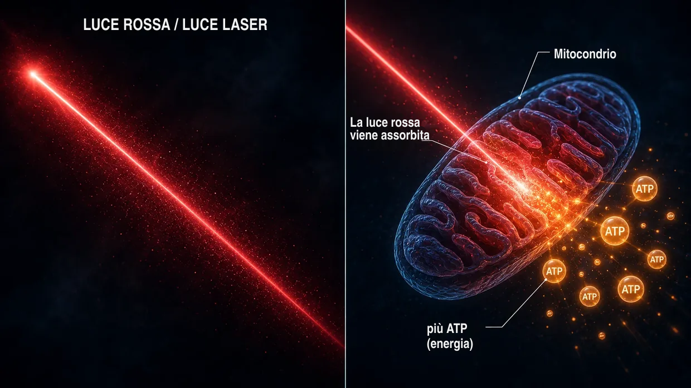
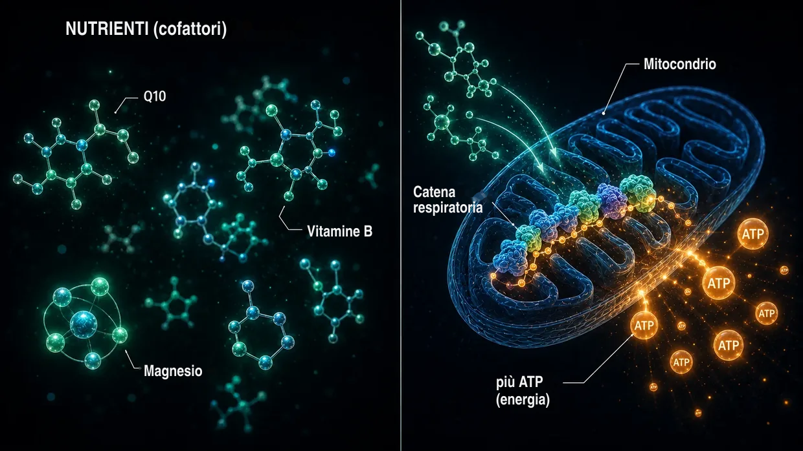

Fonti scientifiche ed evidenza clinica
Questa pagina mostra il fondamento su cui poggia tutto ciò che scrivo su questo sito. Il mio modello è la mia interpretazione personale di ciò che è accaduto a livello cellulare nel mio caso di acufene. Ma i singoli elementi — i crosslinker tra i filamenti di actina nelle stereociglia, l'attivazione delle calpaine in presenza di rumore, il metabolismo dell'ATP, la riparazione mediata da XIRP2, il Central Gain nel cervello, l'asse HPA locale nella coclea, l'effetto mitocondriale del Q10, delle vitamine del gruppo B e della niacina — non sono fantasie. Sono documentati dalla ricerca e sono stati sperimentati nella pratica medica.
Introduzione: due tipi di evidenza
Una premessa onesta: in questa pagina metto insieme due tipi di evidenza — e li affianco consapevolmente, senza porre fin dall'inizio l'uno al di sopra dell'altro.
Primo: gli studi sui meccanismi relativi a crosslinker, calpaine e altro, provenienti dalla ricerca di base. Sono lavori sottoposti a peer review (valutati da esperti indipendenti) pubblicati in riviste come Nature Communications, Journal of Neuroscience, PNAS o eLife. Mostrano come funziona la macchina cellulare (cioè i processi che avvengono nelle singole cellule) — come i crosslinker stabilizzano le stereociglia, come le calpaine si attivano in presenza di rumore, come XIRP2 stabilizza alla meglio i punti di rottura, come l'aumento dell'ATP ripristina l'udito dopo i danni da rumore nella misura consentita dalla capacità fisica individuale. Questi studi sono indispensabili per comprendere il mio modello dell'acufene da rumore.
Secondo: l'evidenza della pratica clinica di medici esperti (cioè ciò che medici esperti hanno osservato e documentato direttamente su pazienti reali nel corso degli anni). Sono voci come quella del dott. Lutz Wilden, che dal 1987 — quindi da oltre 35 anni — tratta con continuità pazienti con problemi dell'orecchio interno mediante laserterapia a bassa intensità e tiene come documentazione standard gli audiogrammi eseguiti prima e dopo il trattamento. A questi si aggiungono migliaia di utilizzatori di laser domestici in tutto il mondo, che accompagnano il proprio trattamento autonomo con audiometrie di controllo. In Svizzera, dagli anni Novanta, anche Tinnitool ha seguito migliaia di pazienti con la stessa logica d'azione (LLLT → aumento dell'ATP nelle cellule ciliate). A ciò si aggiungono il gruppo Hahn di Praga (540 pazienti in due studi pubblicati), l'Università di Kyoto in Giappone e un gruppo di ricerca brasiliano — ciascuno con miglioramenti misurabili non appena il laser era abbastanza potente. Gli studi con un laser troppo debole che, in una prova corretta, non hanno rilevato nulla, li inquadro onestamente più avanti. O il dott. Dietrich Klinghardt, con il suo lavoro pluridecennale sui carichi di metalli pesanti e sostanze tossiche. Questa esperienza pratica in gran parte non è pubblicata nelle grandi riviste scientifiche (come Nature Communications) — e ci sono ragioni, di cui parla Wilden stesso. Questo, però, non cambia il fatto che negli ultimi decenni un numero davvero considerevole di pazienti reali sia guarito seguendo questa via, con documentazione audiometrica.
Perché entrambe le fonti contano
Trovo più onesto affiancare le due fonti di evidenza invece di far finta che l'unica verità da prendere sul serio sia quella sottoposta a peer review. Secondo me, questo dipende dal fatto che gran parte dei fondi per la ricerca sull'acufene tende piuttosto a confluire nello sviluppo di apparecchi acustici e in pipeline di farmaci protette da brevetto. Per combinazioni di nutrienti non brevettabili, per specifici protocolli laser ad alto dosaggio o per protocolli di detossificazione, semplicemente non c'è alcun interesse istituzionale a fare ricerca.
Non sono né un medico, né uno scienziato, né un ricercatore. Sono una persona che ne è stata colpita in passato e che è guarita due volte, e la cui documentazione audiometrica esistente riguarda esclusivamente il primo decorso. Ho letto e fatto ricerche in modo ossessivo e ho provato moltissime cose. Se qui cito uno studio o un medico, non significa che ciò costituisca una prova del fatto che il mio percorso funzioni per te. Significa che i singoli elementi su cui mi baso sono presi sul serio nella ricerca e nella pratica. In caso di disturbi acuti — in particolare di acufene acuto o perdita uditiva — consulta innanzitutto un otorinolaringoiatra per far valutare eventuali cause organiche.
Prima di entrare nei dettagli, una cosa va detta subito: la constatazione più importante emersa da tutta la mia ricerca è uno schema che ho ritrovato più e più volte — in tutti i casi in cui la produzione di energia nelle cellule ciliate è stata aumentata in modo percepibile, l'acufene è migliorato. Tre vie completamente diverse, un denominatore comune. Te lo mostro nel dettaglio più avanti: se vuoi andare subito a quel punto, clicca qui. Con tutti gli altri parto invece dalle fondamenta — com'è costruito l'orecchio e che cosa si rompe in questo processo.
Parte 1: studi sui meccanismi nell'ambito della ricerca di base
Crosslinker tra i filamenti di actina nelle stereociglia
Nella pagina principale paragono le stereociglia a un fascio di spaghetti crudi, tenuto insieme da brevi ponti proteici — i crosslinker. Questi crosslinker non sono una mia invenzione. Sono tre famiglie proteiche ben precise — Plastin/Fimbrin (PLS1), Espin (ESPN) e Fascin-2 (FSCN2) — e la loro esistenza e funzione nelle stereociglia sono documentate a livello molecolare da oltre 20 anni.
Krey JF, Krystofiak ES, Dumont RA, et al. (2016). Plastin 1 widens stereocilia by transforming actin filament packing from hexagonal to liquid. Journal of Cell Biology, 215(4), 467–482. PMID: 27811163. Link
Lo studio chiave per quantificare i crosslinker. Mediante spettrometria di massa, Krey et al. hanno dimostrato che un singolo stereociglio contiene circa 30.500 molecole di Plastin-1, 16.100 molecole di Fascin-2 e 14.800 molecole di Espin tra i filamenti di actina. Dopo l'actina stessa, Plastin-1 è la seconda proteina più abbondante nell'intero stereociglio. I topi privi di Plastin-1 o Fascin-2 funzionali mostravano una funzione uditiva ridotta; i doppi mutanti erano quelli più colpiti. Le stereociglia prive di Plastin-1 sono più corte e sottili rispetto a quelle di tipo selvatico. Questa è la prova sperimentale diretta che i crosslinker sostengono effettivamente l'integrità strutturale delle stereociglia.
Perrin BJ, Strandjord DM, Narayanan P, et al. (2013). β-Actin and Fascin-2 Cooperate to Maintain Stereocilia Length. Journal of Neuroscience, 33(19), 8114–8121. PMID: 23658152. Link
Prova diretta di ciò che accade quando Fascin-2 perde la propria funzione: i topi con una mutazione di Fascin-2 mostrano perdite uditive progressive alle alte frequenze e uno specifico accorciamento della seconda e della terza fila di stereociglia. La variante mutante di Fascin-2 continua sì a legarsi all'actina, ma non riesce più a reticolare efficacemente i filamenti — ed è proprio per questo che le stereociglia perdono la loro lunghezza. È lo stesso esito strutturale finale che descrivo nella pagina principale per la perdita dei crosslinker indotta dal rumore, qui però simulato da una mutazione genetica anziché dalla scissione operata dalle calpaine.
Sekerková G, Zheng L, Loomis PA, et al. (2004). Espins are multifunctional actin cytoskeletal regulatory proteins in the microvilli of chemosensory and mechanosensory cells. Journal of Neuroscience, 24(23), 5445–5456. PMID: 15190118. Link
La caratterizzazione strutturale di Espin come crosslinker dell'actina nelle stereociglia. Espin viene identificata come proteina che raggruppa i filamenti paralleli di actina e non può essere inibita dal calcio — un aspetto importante, perché durante il normale funzionamento l'interno delle stereociglia è soggetto a fluttuazioni del calcio. I topi con Espin difettosa sono sordi e presentano disturbi dell'equilibrio. Le mutazioni di Espin causano sordità ereditaria anche nell'uomo.
Che cosa significa tutto questo nel suo insieme: se i tre crosslinker — Plastin/Fimbrin, Espin, Fascin-2 — provocano già perdita uditiva e difetti strutturali delle stereociglia in seguito a una mutazione genetica o a un knockout, è biologicamente plausibile che una scissione acquisita di questi crosslinker o di crosslinker correlati, indotta dal rumore e operata dalle calpaine — come descrivo nella pagina principale — possa produrre lo stesso esito strutturale finale.
Attivazione delle calpaine in presenza di rumore
In presenza di rumore, nella cellula ciliata affluisce una quantità massiccia di calcio. Questo sovraccarico di calcio attiva le calpaine — enzimi proteasi calcio-dipendenti che in seguito scindono le proteine reticolanti l'actina. La realtà di questo meccanismo è documentata da due laboratori di ricerca indipendenti mediante diversi inibitori delle calpaine.
Lai R, Fang Q, Wu F, Pan S, Haque K, Sha SH. (2023). Prevention of noise-induced hearing loss by calpain inhibitor MDL-28170 is associated with upregulation of PI3K/Akt survival signaling pathway. Frontiers in Cellular Neuroscience, 17, 1199656. Link
Prova diretta del meccanismo delle calpaine: il rumore attiva la µ-calpaina e la m-calpaina nelle cellule ciliate, e l'inibitore delle calpaine MDL-28170 previene sia la perdita uditiva sia la perdita di sinapsi. Lo studio mostra inoltre che la calpaina scinde la proteina strutturale α-fodrina — un reticolante spettrina-actina nella corteccia cellulare. Non si tratta esattamente dello stesso tipo di crosslinker delle proteine Plastin/Espin/Fascin-2 specifiche delle stereociglia, ma ciò dimostra che la calpaina viene attivata in presenza di rumore e attacca le proteine reticolanti l'actina. Che in questo processo possano essere colpiti anche i crosslinker delle stereociglia è un'ipotesi plausibile derivante da questa convergenza.
Yamaguchi T, Yoneyama M, Ogita K. (2017). Calpain inhibitor alleviates permanent hearing loss induced by intense noise by preventing disruption of gap junction-mediated intercellular communication in the cochlear spiral ligament. European Journal of Pharmacology, 803, 187–194. PMID: 28366808. Link
Conferma la meccanica del danno da calpaine in un secondo laboratorio con un altro inibitore (PD150606). Amplia il quadro a un secondo sito di danno: in presenza di rumore, la calpaina attacca anche la comunicazione tramite gap junction nel legamento spirale — la parete laterale della coclea. Il danno da rumore non è mai limitato a un solo punto.
Lettura di approfondimento: Fettiplace R, Hackney CM. (2006). The sensory and motor roles of auditory hair cells. Nature Reviews Neuroscience, 7(1), 19–29. — La rassegna classica sulla struttura e sulla funzione delle cellule ciliate.
Riparazione dell'actina mediante XIRP2 (fase 1)
Wagner EL, Im JS, Sala S, et al. (2023). Repair of noise-induced damage to stereocilia F-actin cores is facilitated by XIRP2 and its novel mechanosensor domain. eLife, 12, e72681. PMID: 37294664. Link
Il principale lavoro meccanicistico sull'autoriparazione delle cellule ciliate. In presenza di rumore si formano «gap» misurabili nell'impalcatura di actina delle stereociglia. Nei topi, questi vengono chiusi entro una settimana da γ-actina appena sintetizzata. La proteina riparatrice XIRP2 riconosce meccanicamente i danni e avvia la riparazione. Senza XIRP2, i danni rimangono permanenti.
Nella pagina principale descrivo XIRP2 come un «nastro americano» che stabilizza alla bell'e meglio i punti di rottura (fase 1). La vera e propria riparazione di fase 2 — ricostruire actina nuova, inserire nuovi crosslinker — in questo studio richiede circa una settimana in topi da laboratorio che ricevono tutto ciò di cui hanno bisogno. Che cosa significhi questo per un essere umano adulto sotto stress, che allo stesso tempo è intrappolato, sul piano energetico, in una ruota da criceto, è la domanda decisiva — perché spesso gli manca proprio l'energia necessaria a questa riparazione.
Finanziato dai NIH (R01DC021176).
Aumento dell'ATP come leva della riparazione: AC102
Questo è il cuore del mio protocollo per il rumore sul versante farmacologico: se la cellula ha troppo poca energia, secondo me si ripara troppo lentamente e in misura insufficiente per far fronte alle sollecitazioni quotidiane. Ecco gli studi che mostrano che questa idea viene presa sul serio dal punto di vista farmaceutico — un'azienda farmaceutica berlinese sta attualmente sviluppando un farmaco che mira proprio a questo meccanismo.
Rommelspacher H, Bera S, Brommer B, Ward R et al. (2024). A single dose of AC102 restores hearing in a guinea pig model of noise-induced hearing loss to almost prenoise levels. PNAS, 121(15), e2314763121. PMID: 38557194. Link
Lo studio centrale su AC102. I test in vitro hanno mostrato che AC102 aumenta nettamente la produzione cellulare di ATP e contemporaneamente riduce le specie reattive dell'ossigeno (ROS). Nel modello animale, una singola dose ha migliorato significativamente l'udito dopo un trauma da rumore – nel titolo dello studio il risultato è descritto come «quasi ai livelli precedenti al rumore» (in concreto: un miglioramento di 13–31 dB a fronte di una perdita uditiva media indotta dal rumore di 80 dB – significativo, ma non un ripristino completo). I meccanismi — dare impulso alla produzione di ATP, ridurre i ROS, proteggere le sinapsi — corrispondono esattamente alla meccanica del mio modello, solo che qui vengono imposti farmacologicamente.
Tziridis K, Rasheed J, Kwiatkowska M, et al. (2025). A Single Dose of AC102 Reverts Tinnitus by Restoring Ribbon Synapses in Noise-Exposed Mongolian Gerbils. International Journal of Molecular Sciences, 26(11), 5124. Link
Qui è stato inoltre verificato se AC102 inverta anche i modelli comportamentali specifici dell'acufene. Risultato: sì, in gran parte — e le sinapsi a nastro tra le cellule ciliate e il nervo uditivo si sono riprese in modo significativo. Prova diretta che la scarica continua di glutammato sul nervo uditivo cessa quando ritorna l'energia cellulare.
Nieratschker M, Yildiz E, Gerlitz M, et al. (2024). A preoperative dose of the pyridoindole AC102 improves the recovery of residual hearing in a gerbil animal model of cochlear implantation. Cell Death & Disease, 15, 531. Link
Estende le evidenze su AC102 a una seconda via di danno: il principio attivo protegge l'udito residuo anche in caso di trauma da impianto cocleare. Ciò mostra che il meccanismo agisce indipendentemente dal fattore scatenante del danno — che si tratti di un trauma meccanico dovuto al rumore o a un intervento chirurgico, la cascata di emergenza cellulare è la stessa e la leva dell'ATP funziona in entrambi i casi.
AudioCure Pharma GmbH. Clinical Study NCT05776459. AC102 è attualmente oggetto di uno studio di fase 2 condotto in tutta Europa su pazienti con ipoacusia neurosensoriale improvvisa (SSNHL) — 210 pazienti inclusi, reclutamento concluso, i risultati non sono ancora disponibili. Link
Stress, asse HPA e coclea come organo neuroendocrino
L'acufene da stress è più difficile da inquadrare scientificamente rispetto all'acufene da rumore. Per il mio modello è decisivo questo: lo stress cronico generale non genera, attraverso l'asse HPA, un proprio suono di acufene. Può però rendere più vulnerabile l'orecchio interno. L'attivazione del sistema simpatico può ridurre l'irrorazione sanguigna; se i vasi della stria vascularis si restringono, l'orecchio interno può diventare più suscettibile ai danni causati dal rumore o da altre sollecitazioni. I lavori seguenti sul sistema locale di segnalazione HPA della coclea descrivono processi fisiologici nell'orecchio interno. Non ne ricavo una via HPA autonoma che generi l'acufene.
Graham CE, Vetter DE. (2011). The mouse cochlea expresses a local hypothalamic-pituitary-adrenal equivalent signaling system and requires corticotropin-releasing factor receptor 1 to establish normal hair cell innervation and cochlear sensitivity. Journal of Neuroscience, 31(4), 1267–1278. PMID: 21273411. Link
Lo studio chiave. La coclea del topo esprime localmente l'intero sistema di segnalazione dell'asse HPA: fattore di rilascio della corticotropina (CRF), recettore CRF1, ACTH, recettore dei mineralcorticoidi e recettore dei glucocorticoidi. I topi con knockout del recettore CRF1 mostrano un'innervazione alterata delle cellule ciliate e una sensibilità cocleare ridotta. Lo studio descrive quindi un sistema locale di regolazione della coclea, non la prova di una via HPA autonoma che generi l'acufene.
Graham CE, Basappa J, Vetter DE. (2010). A corticotropin-releasing factor system expressed in the cochlea modulates hearing sensitivity and protects against noise-induced hearing loss. Neurobiology of Disease, 38(2), 246–258. PMID: 20109547. Link
Lo studio precedente a quello di Graham/Vetter del 2011: mostra che il sistema CRF locale nella coclea modula la sensibilità uditiva e può proteggere dalla perdita uditiva da rumore.
Furuta H, Mori N, Sato C, et al. (1994). Mineralocorticoid type I receptor in the rat cochlea: mRNA identification by PCR and in situ hybridization. Hearing Research, 78(2), 175–180. PMID: 7982810. Link
La prima descrizione storica: i recettori dei mineralcorticoidi sono espressi nella stria vascularis della coclea — proprio nella «batteria» dell'orecchio interno che mantiene la riserva di potassio dell'endolinfa. Lì il cortisolo può modulare la secrezione di potassio attraverso i recettori dei mineralcorticoidi.
Mazurek B, Haupt H, Olze H, Szczepek AJ. (2012). Stress and tinnitus – from bedside to bench and back. Frontiers in Systems Neuroscience, 6, 47. Link
La sintesi sistematica della Charité di Berlino: Mazurek e Szczepek riuniscono i risultati originali di Graham/Vetter e Furuta in tre ipotesi verificabili su come lo stress possa provocare l'acufene — attraverso il sistema HPA locale della coclea, attraverso la modulazione da parte del cortisolo dei recettori dei mineralcorticoidi nella stria vascularis (con conseguenze per la secrezione di potassio) e attraverso la plasticità mediata dal glutammato nella via uditiva. Queste sono le ipotesi degli autori; non le adotto come mio modello della genesi del suono.
Hébert S, Lupien SJ. (2007). The sound of stress: Blunted cortisol reactivity to psychosocial stress in tinnitus sufferers. Neuroscience Letters, 411(2), 138–142. PMID: 17084027. Link
I pazienti con acufene mostrano, in risposta a uno stress psicosociale acuto, una risposta del cortisolo ritardata e attenuata. Lo studio descrive quindi una risposta allo stress alterata nelle persone esaminate; non mostra che un esaurimento dell'asse HPA provochi l'acufene.
Manohar S, Chen GD, Li L, Liu X, Salvi R. (2023). Chronic stress induced loudness hyperacusis, sound avoidance and auditory cortex hyperactivity. Hearing Research, 431, 108726. PMID: 36905854. Link
In questo modello animale, sotto stress cronico da cortisolo, i ratti hanno sviluppato comportamenti di iperacusia e pattern simili all'acufene nella corteccia uditiva — senza alcuna esposizione acuta al rumore. Non è una prova di una via autonoma dell'acufene da stress nel mio modello.
Schaette R, McAlpine D. (2011). Tinnitus with a Normal Audiogram: Physiological Evidence for Hidden Hearing Loss and Computational Model. Journal of Neuroscience, 31(38), 13452–13457. Link
Schaette e McAlpine descrivono il modello del Central Gain: quando l'input uditivo è ridotto, il sistema uditivo centrale aumenta la propria sensibilità. Nel mio modello, il Central Gain amplifica soltanto un segnale anomalo attivo già presente; dalla sola perdita di input non nasce alcun suono di acufene.
Auerbach BD, Rodrigues PV, Salvi RJ. (2014). Central Gain Control in Tinnitus and Hyperacusis. Frontiers in Neurology, 5, 206.
Eggermont JJ, Roberts LE. (2004). The neuroscience of tinnitus. Trends in Neurosciences, 27(11), 676–682.
Auerbach, Rodrigues e Salvi trattano il concetto del Central Gain nel contesto dell'acufene e dell'iperacusia; questa è la posizione di tale rassegna, non il mio modello della genesi del suono. Acufene e iperacusia possono presentarsi insieme, ma non li considero effetti collaterali dell'amplificazione centrale. Eggermont/Roberts (un classico): l'acufene è associato a un'attività neuronale spontanea alterata e a un'organizzazione tonotopica alterata nella corteccia uditiva.
Trauma, stress immagazzinato e coattivazione neuronale delle vie adiacenti
Una via centrale distinta riguarda la domanda: come può un trauma immagazzinato provocare ancora sintomi fisici anni dopo — e come può un focolaio di stress locale e autonomo nel cervello coattivare realmente i centri nervosi adiacenti?
È proprio questo il meccanismo che Michael Prgomet descrive a fini didattici come «campo di tensione elettrostatica» (vedi sezione 14). Nella mia pagina sull'acufene da stress ho presentato il modello in un linguaggio semplice. Questa sezione mostra che i singoli elementi neurobiologici alla base del modello sono ben consolidati scientificamente. L'elemento originale della sintesi è il collegamento di questi elementi in un modello esplicativo coerente — i singoli meccanismi in sé sono stati sottoposti a peer review e replicati più volte.
5.1.1 Il trauma lascia tracce neurobiologiche misurabili
Un'esperienza di stress intensa o cronica modifica in modo dimostrabile la struttura e la funzione di determinate aree cerebrali. Il trauma non rimane «solo psichico», ma viene cablato fisicamente nel sistema nervoso.
McEwen BS, Nasca C, Gray JD. (2016). Stress Effects on Neuronal Structure: Hippocampus, Amygdala, and Prefrontal Cortex. Neuropsychopharmacology, 41(1), 3–23. PMID: 26076834. Link
Descrive come lo stress cronico provochi cambiamenti strutturali e funzionali misurabili nell'ippocampo, nell'amigdala e nella corteccia prefrontale. Proprio queste aree sono centrali per la memoria, la paura, la valutazione e la regolazione dello stress — sono quindi esattamente le strutture che hanno un ruolo in un pattern di stress costantemente attivo.
Sherin JE, Nemeroff CB. (2011). Post-traumatic stress disorder: the neurobiological impact of psychological trauma. Dialogues in Clinical Neuroscience, 13(3), 263–278. PMID: 22034143. Link
Rassegna sugli effetti neurobiologici a lungo termine del trauma: iperreattività dell'amigdala, deficit del controllo prefrontale, alterazioni dell'ippocampo e alterazioni persistenti dei sistemi degli ormoni dello stress. Il trauma, quindi, non è «finito quando finisce la situazione» — è cablato nel sistema nervoso.
Yehuda R, LeDoux J. (2007). Response Variation following Trauma: A Translational Neuroscience Approach to Understanding PTSD. Neuron, 56(1), 19–32. PMID: 17920012. Link
Mostra che il trauma può alterare a lungo termine l'asse HPA, il sistema noradrenergico, la reattività autonomica e la funzione dell'ippocampo. Questa è la base meccanicistica dei pattern di stress immagazzinati che possono continuare ad agire in sottofondo.
5.1.2 Carico allostatico — perché solo lo stress cronico diventa problematico
Lo stress acuto e situazionale è sano e ben tollerabile. I fenomeni che descrivo nella pagina sull'acufene da stress non si manifestano in seguito a un normale litigio o a uno stress acuto — sorgono soltanto quando il sistema non riesce più a recuperare e il carico si accumula nel tempo.
McEwen BS. (1998). Stress, Adaptation, and Disease: Allostasis and Allostatic Load. Annals of the New York Academy of Sciences, 840(1), 33–44. PMID: 9629234. Link
Fonda il concetto di carico allostatico. Lo stress acuto è utile; il carico cronico e cumulativo danneggia il sistema. È proprio questo punto a distinguere con precisione il mio modello dall'affermazione fuorviante «lo stress, in generale, provoca l'acufene». Non si tratta dello stress quotidiano — si tratta di sistemi già cronicamente sotto carico.
McEwen BS, Stellar E. (1993). Stress and the individual: mechanisms leading to disease. Archives of Internal Medicine, 153(18), 2093–2101. PMID: 8379800.
Descrive i meccanismi attraverso i quali lo stress cronico porta alla malattia — attraverso il carico cumulativo, non attraverso singoli episodi. Spiega chiaramente perché non tutte le persone sottoposte allo stress quotidiano sviluppano questi fenomeni, ma soltanto quelle il cui sistema è già cronicamente destabilizzato.
5.1.3 Sensibilizzazione centrale — l'amplificatore nel sistema nervoso già sotto carico
In presenza di un carico cronico, il sistema nervoso centrale diventa più sensibile agli stimoli. L'inibizione diminuisce, l'eccitabilità aumenta, le soglie di stimolazione si abbassano. Stimoli prima sottosoglia diventano improvvisamente sufficienti a provocare sintomi. È la descrizione scientifica di ciò che nella pagina sull'acufene da stress definisco un «sistema già sotto carico e ricettivo agli stimoli».
Woolf CJ. (2011). Central sensitization: Implications for the diagnosis and treatment of pain. Pain, 152(3 Suppl), S2–S15. PMID: 20961685. Link
Definisce la sensibilizzazione centrale come una maggiore reattività dei neuroni centrali a stimoli in entrata normali o sottosoglia. Un caposaldo consolidato della moderna ricerca sul dolore. Il mio modello trasferisce questo principio all'acufene da stress.
Latremoliere A, Woolf CJ. (2009). Central sensitization: a generator of pain hypersensitivity by central neural plasticity. The Journal of Pain, 10(9), 895–926. PMID: 19712899. Link
Descrizione dettagliata dei meccanismi cellulari e molecolari della sensibilizzazione centrale. Mostra come un sistema già sotto carico crei anzitutto il presupposto perché piccoli campi di stress possano diventare sintomatici.
Yunus MB. (2008). Central sensitivity syndromes: a new paradigm and group nosology for fibromyalgia and overlapping conditions. Seminars in Arthritis and Rheumatism, 37(6), 339–352. PMID: 18191990. Link
Applica il concetto di sensibilizzazione centrale alla fibromialgia, alla stanchezza cronica, all'intestino irritabile, all'acufene cronico e a sindromi correlate. È esattamente il ponte che ancora scientificamente il mio modello dell'acufene da stress.
5.1.4 Accoppiamento efaptico — co-stimolazione elettrica diretta delle cellule nervose adiacenti
Questo è il solido nucleo neurofisiologico dietro la metafora di Van de Graaff. Quando un'area neuronale scarica intensamente e in modo sincrono, genera campi elettrici locali che possono effettivamente influenzare le cellule nervose adiacenti — senza una sinapsi classica. Se l'attività è sufficiente, questi campi possono spingere le cellule vicine oltre la soglia di eccitazione e sincronizzare il loro comportamento di scarica. È proprio questo il meccanismo dietro «il nervo A scarica, il nervo B viene trascinato».
Anastassiou CA, Perin R, Markram H, Koch C. (2011). Ephaptic coupling of cortical neurons. Nature Neuroscience, 14(2), 217–223. PMID: 21240273. Link
Dimostrazione sperimentale diretta dell'accoppiamento efaptico nella corteccia. Lo studio ha mostrato che i campi elettrici extracellulari possono modificare il potenziale di membrana dei neuroni adiacenti e sincronizzare la tempistica dei potenziali d'azione. Questa è la prova centrale che un gruppo di cellule nervose fortemente attivo può effettivamente coattivare elettricamente le cellule vicine.
Buzsáki G, Anastassiou CA, Koch C. (2012). The origin of extracellular fields and currents — EEG, ECoG, LFP and spikes. Nature Reviews Neuroscience, 13(6), 407–420. PMID: 22595786. Link
Rassegna fondamentale sulla formazione dei campi elettrici nel cervello. Descrive come gruppi di neuroni attivi in modo sincrono possano influenzare funzionalmente altri neuroni attraverso gradienti di tensione. Chiarisce che non si tratta di «grandi fulmini» come quelli di una sfera ad alta tensione — sono piccoli effetti di campo circoscritti localmente, ma sono reali e biologicamente attivi.
Fröhlich F, McCormick DA. (2010). Endogenous electric fields may guide neocortical network activity. Neuron, 67(1), 129–143. PMID: 20624597. Link
Mostra che i campi elettrici endogeni non si limitano ad accompagnare l'attività delle reti neuronali, ma contribuiscono a regolarla causalmente. Un pesante chiodo nella bara dell'ipotesi che gli effetti dei campi elettrici nel cervello siano soltanto un fenomeno concomitante.
5.1.5 Kindling — la stimolazione ripetuta consolida il pattern
Quando un'area neuronale viene stimolata ripetutamente sotto soglia, nel tempo diventa sempre più facile da attivare — e recluta in misura crescente anche le aree vicine. Il fenomeno è consolidato nella ricerca sull'epilessia ed è stato ormai trasferito anche agli stati cronici di dolore, trauma e iperreattività.
Goddard GV, McIntyre DC, Leech CK. (1969). A permanent change in brain function resulting from daily electrical stimulation. Experimental Neurology, 25(3), 295–330. PMID: 4981856.
Il classico lavoro originale sul fenomeno del kindling. La stimolazione ripetuta sotto soglia produce un cambiamento permanente della funzione cerebrale — nel tempo, l'area diventa sempre più facile da attivare.
Post RM. (2007). Kindling and sensitization as models for affective episode recurrence, cyclicity, and tolerance phenomena. Neuroscience & Biobehavioral Reviews, 31(6), 858–873. PMID: 17555817. Link
Trasferimento del concetto di kindling ai disturbi affettivi, al PTSD e agli stati di stress cronico. Spiega scientificamente perché i pattern di stress riattivati cronicamente possano, nel tempo, non attenuarsi ma diventare più forti e più estesi — esattamente il fenomeno che descrivo nella pagina sull'acufene da stress.
5.1.6 Attivazione della glia e neuroinfiammazione — l'amplificatore biochimico
La stimolazione cronica attiva la microglia e gli astrociti. Questi rilasciano mediatori (TNF-α, IL-1β, IL-6) che aumentano in modo misurabile l'eccitabilità dei neuroni circostanti — portando così l'intera area in uno stato più facile da attivare. È l'amplificatore biochimico tra «sistema già sotto carico» e «il campo di stress può farsi strada».
Ji RR, Nackley A, Huh Y, Terrando N, Maixner W. (2018). Neuroinflammation and Central Sensitization in Chronic and Widespread Pain. Anesthesiology, 129(2), 343–366. PMID: 29462012. Link
Dimostrazione diretta di come l'attivazione della glia alimenti la sensibilizzazione centrale. La microglia e gli astrociti non sono soltanto cellule di sostegno passive — modulano attivamente l'eccitabilità neuronale e, in presenza di un carico cronico, possono portare il tessuto nervoso in uno stato permanentemente più reattivo agli stimoli.
Michopoulos V, Powers A, Gillespie CF, Ressler KJ, Jovanovic T. (2017). Inflammation in Fear- and Anxiety-Based Disorders: PTSD, GAD, and Beyond. Neuropsychopharmacology, 42(1), 254–270. PMID: 27510423. Link
Il PTSD e l'ansia cronica sono associati ad alterazioni infiammatorie misurabili nel sistema nervoso. Chiude il cerchio: trauma → stress → neuroinfiammazione → tessuto più reattivo agli stimoli → maggiore facilità di attivazione dei pattern di stress immagazzinati.
5.1.7 Disritmia talamocorticale — riferimento diretto all'acufene
Nell'acufene cronico, studi MEG ed EEG mostrano pattern patologici di oscillazione tra il talamo e la corteccia uditiva. Un pattern di attività localmente alterato genera accoppiamenti theta-gamma persistenti, che possono contribuire alla percezione duratura di un suono. È il ponte neurofisiologico diretto tra un campo di stress iperattivo e una percezione duratura dell'acufene.
Llinás RR, Ribary U, Jeanmonod D, Kronberg E, Mitra PP. (1999). Thalamocortical dysrhythmia: A neurological and neuropsychiatric syndrome characterized by magnetoencephalography. PNAS, 96(26), 15222–15227. PMID: 10611366. Link
Fonda il concetto di disritmia talamocorticale come meccanismo dei sintomi neurologici cronici — misurato con una tecnologia MEG ad alta sensibilità. Proprio quei dispositivi MEG con i quali è possibile rendere visibili anche campi di tensione cerebrali molto piccoli e circoscritti localmente.
De Ridder D, Vanneste S, Langguth B, Llinás R. (2015). Thalamocortical Dysrhythmia: A Theoretical Update in Tinnitus. Frontiers in Neurology, 6, 124. PMID: 26106362. Link
Trasferimento diretto del concetto all'acufene cronico con dati MEG. Mostra che nei pazienti con acufene cronico sono misurabili accoppiamenti theta-gamma patologici nella corteccia uditiva.
Vanneste S, De Ridder D. (2012). The auditory and non-auditory brain areas involved in tinnitus. An emergent property of multiple parallel overlapping subnetworks. Frontiers in Systems Neuroscience, 6, 31. PMID: 22586375. Link
Mostra che l'acufene cronico è associato a un'interazione alterata tra più reti cerebrali — uditive e non uditive. Le reti dello stress e del distress sono funzionalmente collegate alle reti uditive. È questa la connessione attraverso la quale un pattern di stress iperattivo può ripercuotersi sul sistema uditivo.
5.1.8 Riconsolidamento della memoria — perché i vecchi pattern di stress possono dissolversi
I vecchi ricordi emotivi non sono cablati per sempre. Quando vengono riattivati, entrano brevemente in uno stato labile e possono essere immagazzinati di nuovo — modificati o scaricati. È la base scientifica del perché metodi come quello di Michael Prgomet, l'EMDR o altri approcci terapeutici basati sulla riattivazione possano funzionare.
Nader K, Schafe GE, Le Doux JE. (2000). Fear memories require protein synthesis in the amygdala for reconsolidation after retrieval. Nature, 406(6797), 722–726. PMID: 10963596. Link
Il classico lavoro originale sul riconsolidamento della memoria. Mostra nel modello animale che un ricordo di paura già immagazzinato, dopo essere stato nuovamente richiamato, può tornare in uno stato labile e deve essere stabilizzato di nuovo — e che nel processo può essere modificato in modo mirato.
Lane RD, Ryan L, Nadel L, Greenberg L. (2015). Memory reconsolidation, emotional arousal, and the process of change in psychotherapy: New insights from brain science. Behavioral and Brain Sciences, 38, e1. PMID: 24827452. Link
Trasferimento del concetto all'applicazione terapeutica. Mostra che una riattivazione mirata, seguita da una nuova elaborazione, può modificare vecchi programmi emotivi. È proprio questo il meccanismo alla base del lavoro di Prgomet — anche se il suo metodo specifico non è comprovato da RCT classici.
5.1.9 La sintesi: il mio modello in un'immagine
Componendo i singoli elementi emerge il seguente quadro complessivo — ed è esattamente ciò che descrivo in un linguaggio semplice nella mia pagina sull'acufene da stress:
- Il trauma o lo stress cronico modificano la struttura cerebrale e l'asse HPA → il sistema presenta un'architettura di base alterata (5.1.1)
- Il carico allostatico si accumula, il sistema non riesce più a recuperare → il sistema si ritrova già sotto carico (5.1.2)
- La sensibilizzazione centrale rende l'intero sistema nervoso più reattivo agli stimoli → soglie più basse (5.1.3)
- La glia e la neuroinfiammazione amplificano biochimicamente la reattività agli stimoli (5.1.6)
- Un trigger riattiva il pattern di stress immagazzinato → l'area locale scarica più intensamente
- Il kindling ha reso l'area sempre più pronta a reagire nel corso del tempo (5.1.5)
- L'accoppiamento efaptico consente la coattivazione elettrica delle vie adiacenti (5.1.4)
- Se questa coattivazione raggiunge le reti che elaborano i suoni, può generarsi una reale percezione sonora
- La disritmia talamocorticale stabilizza questo pattern (5.1.7)
- Il riconsolidamento della memoria mostra che pattern di questo tipo possono dissolversi quando la fonte originaria viene riattivata in modo mirato e rielaborata (5.1.8)
Ognuno di questi dieci elementi è stato sottoposto a peer review e replicato più volte. L'originalità del mio modello non sta in un singolo meccanismo — sta nel collegamento. Nella prassi otorinolaringoiatrica consolidata, questa connessione viene raramente considerata nel suo insieme; per questo l'acufene da stress viene spesso liquidato come «solo psiche» oppure trattato con misure isolate come la CBT, senza spiegare la meccanica sottostante.
Che cosa non afferma questa sezione
Per essere chiari — ecco che cosa non viene affermato:
- Non si afferma che ogni acufene cronico sia dovuto allo stress. L'acufene da rumore, l'acufene da ototossicità e altre forme hanno altre cause principali (vedi le rispettive sezioni).
- Non si afferma che il metodo specifico di Michael Prgomet sia comprovato da classici studi sottoposti a peer review (vedi sezione 14). Sono comprovati i singoli meccanismi neurobiologici alla base del suo modello esplicativo.
- Non si afferma che tutti i sintomi psicosomatici in presenza di stress cronico sorgano esattamente attraverso questo meccanismo. Esistono numerose altre vie.
- Non viene fatta alcuna promessa di guarigione. I decorsi individuali possono variare notevolmente.
Quanto viene riportato qui è questo: i singoli elementi che sostengono il mio modello dell'acufene da stress sono scientificamente consolidati.
Acufene indotto da farmaci e sostanze tossiche
Alcuni farmaci e sostanze nocive aggrediscono direttamente le cellule ciliate. Il meccanismo è diverso da quello del rumore — ma l'esito cellulare finale è per lo più lo stesso: sovraccarico di calcio nei mitocondri, carenza di ATP, apoptosi. Convergenza del modello lungo una seconda via indipendente.
Salvi R, Ding D, Manohar S, et al. (2022). Salicylate Ototoxicity, Tinnitus, and Hyperacusis. Springer Nature, Handbook of Neurotoxicity. Link
La revisione completa sull'ototossicità indotta dall'aspirina. Il salicilato blocca la prestina — il motore elettromotore delle cellule ciliate esterne — e innesca a livello centrale una reazione di acufene. Il sovradosaggio acuto è reversibile, l'esposizione cronica ad alte dosi può provocare cambiamenti strutturali permanenti.
Sheppard A, Hayes SH, Chen GD, et al. (2014). Review of salicylate-induced hearing loss, neurotoxicity, tinnitus and neuropathophysiology. Acta Otorhinolaryngologica Italica, 34(2), 79–93. Link
Analisi dettagliata degli effetti del salicilato.
Esterberg R, Linbo T, Pickett SB, et al. (2016). Mitochondrial calcium uptake underlies ROS generation during aminoglycoside-induced hair cell death. Journal of Clinical Investigation. Link
Gli antibiotici aminoglicosidici (gentamicina, streptomicina) vengono assorbiti dalle cellule ciliate e inducono l'ingresso di calcio nei mitocondri, il che porta a una massiccia produzione di ROS. Dal punto di vista meccanicistico, si tratta esattamente della cascata calcio-mitocondri che descrivo nella pagina principale — soltanto con un fattore scatenante chimico invece che meccanico.
Jiang M, Karasawa T, Steyger PS. (2017). Aminoglycoside-Induced Cochleotoxicity: A Review. Frontiers in Cellular Neuroscience, 11, 308. Link
Panoramica sulla tossicità degli aminoglicosidi: ingresso attraverso i canali di meccanotrasduzione, danno mitocondriale, apoptosi.
Coenzima Q10 e protezione dei mitocondri
Il Q10 era parte integrante del mio protocollo. È un trasportatore di elettroni nella catena respiratoria mitocondriale e al tempo stesso un potente antiossidante.
Fetoni AR, Piacentini R, Fiorita A, Paludetti G, Troiani D. (2009). Water-soluble Coenzyme Q10 formulation (Q-ter) promotes outer hair cell survival in a guinea pig model of noise induced hearing loss (NIHL). Brain Research, 1257, 108–116. PMID: 19133240. Link
Modello animale: il Q10 ha ridotto significativamente l'apoptosi delle cellule ciliate esterne dopo un trauma da rumore.
Staffa P et al. (2014). Activity of coenzyme Q10 (Q-Ter multicomposite) on recovery time in noise-induced hearing loss. Noise and Health. Link
Piccolo studio sull'uomo (30 partecipanti): il Q10 idrosolubile ha abbreviato il tempo di recupero dopo l'esposizione al rumore e ha ridotto l'acufene provocato dal rumore.
Astolfi L et al. (2016). Coenzyme Q10 plus Multivitamin Treatment Prevents Cisplatin Ototoxicity in Rats. PLoS ONE, 11(9), e0162106. PMID: 27632426.
Il Q10 più un multivitaminico ha protetto i ratti dai danni ototossici causati dal chemioterapico cisplatino — lo stesso meccanismo protettivo lungo una terza via.
Magnesio e vitamina B12
Cevette MJ, Barrs DM, Patel A, et al. (2011). Phase 2 study examining magnesium-dependent tinnitus. International Tinnitus Journal, 16(2), 168–173. PMID: 22249877. Link
Studio della Mayo Clinic: la somministrazione quotidiana di 532 mg di magnesio per tre mesi ha portato a una riduzione significativa dei punteggi relativi all'impatto dell'acufene.
Singh C, Kawatra R, Gupta J, et al. (2016). Therapeutic role of Vitamin B12 in patients of chronic tinnitus: A pilot study. Noise & Health, 18(81), 93–97. Link
Studio pilota in doppio cieco: il 42,5% dei pazienti con acufene presentava una carenza di vitamina B12. Chi presentava una carenza ed è stato trattato con iniezioni di B12 ha mostrato miglioramenti significativi.
Shemesh Z, Attias J, Ornan M, et al. (1993). Vitamin B12 deficiency in patients with chronic-tinnitus and noise-induced hearing loss. American Journal of Otolaryngology, 14(2), 94–99. PMID: 8484483. Link
La prima descrizione storica: il 47% delle persone con acufene e perdita uditiva indotta dal rumore presentava una carenza di B12 — rispetto al 27% delle persone con danni da rumore ma senza acufene e soltanto al 19% delle persone con udito normale.
Biodisponibilità e assorbimento dei nutrienti
Nella mia pagina sulla biodisponibilità spiego perché, nelle persone sottoposte a stress cronico, la forma e la modalità di somministrazione dei nutrienti sono spesso più importanti dell'elenco degli ingredienti. La fisiologia sottostante è ben consolidata — è alla base della terapia di reidratazione orale utilizzata in tutto il mondo, che dagli anni Sessanta ha salvato milioni di vite.
Loo DDF, Zeuthen T, Chandy G, Wright EM. (1996). Cotransport of water by the Na+/glucose cotransporter. PNAS. Link
Il lavoro fondamentale sul cotrasportatore SGLT1: a ogni ciclo di trasporto, sodio, glucosio e circa 260 molecole d'acqua vengono pompati contemporaneamente nell'organismo.
Buccigrossi V et al. (2020). Potency of Oral Rehydration Solution in Inducing Fluid Absorption is Related to Glucose Concentration. Scientific Reports, 10, 7803. Link
Non tutte le miscele di sodio e glucosio agiscono allo stesso modo — il rapporto ottimale è di circa 60 mmol/L di sodio e 111 mmol/L di glucosio. La formulazione deve essere calibrata con precisione.
Topi vs. esseri umani — perché sono prudente con i modelli animali
Valero MD, Burton JA, Hauser SN, et al. (2017). Noise-induced cochlear synaptopathy in rhesus monkeys (Macaca mulatta). Hearing Research, 353, 213–223. PMID: 28712672. Link
Nei primati, dopo l'esposizione al rumore, è stata misurata una perdita di sinapsi del 12–27% — rispetto al 40–55% nei topi. I primati (e quindi probabilmente anche gli esseri umani) sono colpiti meno gravemente da una singola esposizione al rumore rispetto ai topi.
Ma attenzione al ragionamento inverso: una minore vulnerabilità iniziale non equivale automaticamente a una migliore capacità di riparazione. Al contrario — nelle condizioni della vita quotidiana, l'essere umano combina un livello più basso di riparazione spontanea (a causa di stress, mancanza di sonno e un apporto più scarso) con una storia di danni più estesa e più lontana nel tempo. Questa è una tesi centrale della mia argomentazione.
Il filo conduttore: aumento dell'ATP = miglioramento dell'acufene
Prima di entrare nelle sezioni di dettaglio, voglio mostrarti il riscontro centrale che sta alla base di tutto. Se da questa pagina delle fonti devi portarti via una sola cosa, è questa:
Ogni volta che, negli ultimi decenni, in qualche parte del mondo — con qualunque metodo — è stata aumentata la produzione di ATP nelle cellule ciliate dell'orecchio interno, l'acufene è migliorato.
Non è una teoria né un pio desiderio. È il riscontro coerente di tre filoni terapeutici del tutto indipendenti, studiati e applicati da scienziati e medici in almeno dieci Paesi diversi, con metodi diversi e su differenti coorti di pazienti. Ecco i tre filoni — tutti conducono allo stesso punto d'arrivo biochimico.
Filone 1: aumento dell'ATP mediante luce laser (fotobiomodulazione / LLLT)

La luce laser nell'intervallo 600–900 nm viene assorbita dalla citocromo c ossidasi nella catena respiratoria dei mitocondri. L'effetto biochimico: più ATP, meno stress ossidativo; la cellula può uscire dalla modalità di emergenza energetica.
Principali rappresentanti di questo filone:
- Dr. Lutz Wilden, Bad Füssing/Ibiza, dal 1987 — ha trattato migliaia di pazienti con acufene con laser da 830 nm ad alto dosaggio, ha documentato le misurazioni audiometriche e pubblicato i risultati clinici (dettagli e valutazione onesta nella sezione 12)
- Gruppo Hahn, Università Carolina di Praga, 2001/2012 — 420 pazienti nello studio più ampio dei due, miglioramento oggettivo dell'acufene nel 56,7% dei casi, in media di 30 dB, mediante la combinazione di laser + ginkgo (EGb 761) (sostiene la terapia combinata, non il laser in monoterapia)
- Tauber et al., LMU Monaco di Baviera, 2003 — sistema TCL per l'irradiazione transmeatale della coclea
- Cuda & De Caria, Italia, 2008 — combinazione di consulenza e LLLT
- Teggi et al., San Raffaele Milano, 2008/2009 — LLLT nella malattia di Ménière
- Mollasadeghi et al., Iran, 2013 — RCT in doppio cieco sull'acufene da rumore, con risultati significativi
- Shiomi et al., Università di Kyoto, 1997 — 40 mW 830 nm per via transmeatale, pionieri
- Panhóca et al., Brasile, 2023 — RCT comparativo, LLLT come procedura più efficace
→ Per tutti i dettagli, vedi la sezione 11: logica del dosaggio LLLT e la sezione 12: Dr. Wilden.
Filone 2: aumento dell'ATP mediante farmaci (AC102)
Un principio attivo farmacologico sviluppato a Berlino, che interviene direttamente nella produzione mitocondriale di ATP e allo stesso tempo degrada le specie reattive dell'ossigeno (molecole di scarto aggressive che attaccano la cellula dall'interno — una sorta di ruggine cellulare). L'industria farmaceutica riprende qui ciò che Wilden e Hahn fanno da decenni — ma sotto forma di farmaco brevettabile.
Principali rappresentanti di questo filone:
- Rommelspacher et al., AudioCure Pharma, Berlino, rivista PNAS 2024 — una singola dose migliora nettamente l'udito dopo un trauma da rumore nel modello animale (in modo significativo, ma senza un recupero completo), ATP aumentato, specie reattive dell'ossigeno (ruggine cellulare) ridotte, sinapsi protette
- Tziridis et al., rivista Int. J. Mol. Sci. 2025 — le sinapsi a nastro (i sottili punti di contatto attraverso i quali le cellule ciliate trasmettono il loro segnale al nervo uditivo) si riprendono, gli schemi comportamentali specifici dell'acufene diminuiscono
- Nieratschker et al., rivista Cell Death & Disease 2024 — efficace anche in caso di trauma da impianto cocleare
- Studio clinico di fase 2 NCT05776459 — condotto in tutta Europa su 210 pazienti con SSNHL (persone con ipoacusia improvvisa, cioè una perdita uditiva improvvisa nell'orecchio interno)
→ Per tutti i dettagli, vedi la sezione 4.
Filone 3: aumento dell'ATP mediante nutrienti

Cofattori mitocondriali che sostengono direttamente la catena respiratoria o ne sbloccano il funzionamento. Senza una quantità sufficiente di Q10, il trasporto degli elettroni tra il complesso I/II e il complesso III non funziona. Senza una quantità sufficiente di B12, le fibre nervose si demielinizzano, comprese quelle del nervo uditivo. Senza una quantità sufficiente di magnesio, circa 600 reazioni enzimatiche non funzionano, compresa la stessa sintesi di ATP. Gli antiossidanti come vitamina C, vitamina E, selenio, zinco e acido alfa-lipoico proteggono la cellula dalle specie reattive dell'ossigeno che si producono come conseguenza della modalità di emergenza energetica.
3.1 Cofattori mitocondriali classici (Q10, magnesio, B12)
- Fetoni et al., Brain Research 2009 — Q10 riduce significativamente l'apoptosi delle cellule ciliate esterne dopo un trauma da rumore
- Staffa et al., Noise & Health 2014 — Q10 abbrevia il tempo di recupero dopo l'esposizione al rumore e riduce l'acufene
- Astolfi et al., PLOS One 2016 — la combinazione di Q10 e un multivitaminico protegge dall'ototossicità del cisplatino
- Cevette et al., Mayo Clinic 2011 — 532 mg di magnesio per 3 mesi riducono significativamente l'impatto dell'acufene (Importante: studio in aperto senza controllo con placebo, quindi pionieristico, ma non una prova conclusiva, poiché l'acufene presenta un marcato decorso spontaneo e un effetto placebo)
- Singh et al., Noise & Health 2016 — il 42,5% dei pazienti con acufene presenta una carenza di B12; la supplementazione produce un miglioramento significativo nei pazienti carenti
- Shemesh et al., 1993 — prima descrizione storica del nesso tra B12 e acufene
→ Per tutti i dettagli, vedi la sezione 7 e la sezione 8.
3.2 Niacina / vitamina B3 / NAD+ — la leva più diretta in assoluto sull'ATP
Le dosi citate qui provengono da studi pubblicati e non costituiscono raccomandazioni per l'automedicazione. Prima di qualsiasi supplementazione – soprattutto a dosi più elevate – parlane con il tuo medico.
La niacina (vitamina B3, nelle sue forme di acido nicotinico, nicotinamide e riboside di nicotinamide) è il precursore metabolico diretto di NAD+ e NADH — i coenzimi della catena respiratoria mitocondriale. Senza una quantità sufficiente di NAD+, il ciclo di Krebs non può fornire elettroni alla catena respiratoria e, senza questi elettroni, non viene prodotto ATP. La niacina non è quindi semplicemente «un altro nutriente per l'acufene», ma un precursore diretto della produzione di ATP nelle cellule ciliate. Se il mio modello è corretto – l'acufene cronico è una crisi energetica della cellula ciliata –, allora la supplementazione di niacina dovrebbe aiutare. Per essere scientificamente onesto su questo punto: gli studi clinici diretti sulla niacina nell'acufene sono datati (risalgono in prevalenza al periodo compreso tra gli anni Quaranta e gli anni Ottanta del Novecento) e per la maggior parte non controllati. Esistono sì resoconti positivi provenienti da decenni di pratica della medicina naturale, ma non esiste una prova moderna, basata su un RCT in doppio cieco, che la niacina migliori l'acufene nell'uomo. Dal punto di vista meccanicistico, tuttavia, l'approccio è sostenuto in modo eccellente, anche se sul piano clinico non è ancora stato dimostrato in via definitiva per l'acufene nell'uomo (qui la fiducia poggia sul filone della pratica).
Il flush da niacina — e perché è importante dal punto di vista biologico
Chi assume per la prima volta acido nicotinico (soprattutto a stomaco vuoto o a dosi più elevate a partire da 100 mg), dopo 15–30 minuti sperimenta il famigerato flush da niacina: la pelle diventa calda, formicola e si arrossa dal viso al petto, a volte fino alle cosce. Sembra una scottatura solare e dà la sensazione di un accumulo di calore. Dura 30–60 minuti, è innocuo e passa da solo. La prima volta si pensa: «Sto morendo». La seconda: «Ah, ecco cos'è il flush». La terza: «In realtà non è poi così male».
Che cosa succede: l'acido nicotinico induce nell'organismo il rilascio delle prostaglandine D2 ed E2 — messaggeri che dilatano i vasi. Il flush è quindi il segno visibile che la sostanza è biologicamente attiva e stimola la circolazione. Per questo l'acido nicotinico nella sua forma originaria (con flush) è così prezioso per il mio modello — a differenza della forma senza flush (nicotinamide), che viene anch'essa convertita in NAD+ ma non dilata i vasi. Fino a dove arrivi questo effetto — se solo alla pelle o in profondità nei tessuti — è ciò che ho esaminato dettagliatamente nella sezione successiva.
Indicazioni pratiche:
- Con il tempo il corpo si abitua e il flush si attenua
- Per basse dosi continuative, la soluzione più lineare è assumere acido nicotinico non tamponato dopo i pasti
Fin dove arriva l'aumento del flusso sanguigno? — Solo alla pelle, o in profondità e per via sistemica fino all'orecchio interno?
Non ho trovato uno studio sull'uomo che dimostri che l'acido nicotinico penetri fino all'orecchio interno e vi aumenti il flusso sanguigno. Esistono tuttavia numerosi indizi che puntano proprio in questa direzione.
È ben documentato che l'acido nicotinico può stimolare la circolazione — a una dose sufficiente lo si avverte subito dal volto che brucia. La domanda interessante non è quindi se abbia un effetto in assoluto, ma fin dove arrivi: rimane un puro fenomeno superficiale della pelle — oppure agisce anche in profondità nei tessuti e in modo sistemico in tutto il corpo, fino a zone come l'orecchio interno?
Prima la biologia — perché questa via è effettivamente aperta. Prima di mostrare gli studi — e un affascinante resoconto tratto dalla pratica di un medico che mi ha davvero lasciato di stucco — vale la pena guardare innanzitutto al meccanismo, perché spiega per quale motivo tutto questo ha senso.
Quando ne viene assorbita una quantità sufficiente, l'acido nicotinico circola nel sangue e raggiunge i tessuti. Ma non apre direttamente i vasi — agisce da innesco: induce le cellule immunitarie a rilasciare messaggeri, le prostaglandine D2 ed E2. La quantità rilasciata dipende da quanto acido nicotinico arriva nel sangue — quindi dalla dose e dalla biodisponibilità.
Questi due messaggeri hanno ruoli diversi:
- D2 è il primo colpo, rapido e potente. Sostiene l'ondata visibile — l'arrossamento, il calore, il formicolio.
- E2 interviene dopo e agisce più a lungo. Prolunga l'effetto quando l'arrossamento visibile si è ormai attenuato da tempo.
Il flush non è quindi la fine dell'effetto — ne è solo la parte visibile.
Hanson J, Gille A, Zwykiel S, et al. (2010). Nicotinic acid- and monomethyl fumarate-induced flushing involves GPR109A expressed by keratinocytes and COX-2-dependent prostanoid formation in mice. Journal of Clinical Investigation, 120(8), 2910-2919. DOI: 10.1172/JCI42273. Link
Questi messaggeri agiscono poi nei tessuti circostanti. Ma solo dove si trovano i recettori adatti — le serrature per queste chiavi. Quando vengono attivati, i vasi si dilatano.
E, cosa importante, proprio queste serrature sono state rilevate nell'orecchio interno. Lì depongono a favore di una dilatazione — ed è proprio ciò che, come vedremo tra poco, il modello animale ha anche misurato direttamente.
La via è quindi biologicamente aperta: se la sostanza arriva nel sangue in quantità sufficiente, viene distribuita ampiamente nel corpo → le cellule immunitarie producono il messaggero → nell'orecchio interno è presente la serratura adatta → e dove la chiave entra nella serratura, il vaso si dilata.
Stjernschantz J, Wentzel P, Rask-Andersen H (2004). Localization of prostanoid receptors and cyclo-oxygenase enzymes in guinea pig and human cochlea. Hearing Research, 197(1-2), 65-73. DOI: 10.1016/j.heares.2004.04.018. Link
Nakagawa T (2011). Roles of prostaglandin E2 in the cochlea. Hearing Research, 276(1-2), 27-33. DOI: 10.1016/j.heares.2011.01.015. Link
Uno schema che attraversa tutto. L'acido nicotinico apre i vasi anche quando il corpo in quel momento vuole mantenerli contratti. Lo si vede in qualunque persona sana di diciotto anni: a riposo il corpo mantiene intenzionalmente contratti i vasi cutanei — come protezione termica e per regolare la circolazione. L'acido nicotinico scavalca questo comando e spinge il flusso sanguigno persino oltre il livello di riposo. È proprio per questo che compaiono l'arrossamento e il calore — il flush ne è il segno visibile.
E niente paura: dopo non si va in giro tutto il giorno con la testa paonazza. L'arrossamento visibile — la rapida ondata di D2 — si attenua nell'arco di circa mezz'ora-un'ora.
E questo è il punto decisivo: se l'acido nicotinico riesce già a prevalere su un comando attivo dell'organismo di restringere i vasi — perché dovrebbe fermarsi proprio davanti a un vaso dell'orecchio interno ristretto dallo stress?
Perché, a mio avviso, questo è particolarmente rilevante per chi soffre di acufene. E con questo arriviamo a ciò che mi interessa davvero.
Dalle mie ricerche risulta che chi soffre di acufene è quasi sempre sottoposto a una tensione enorme — è l'acufene stesso a generarla: paura, sonno peggiore, ascolto continuo e vigile. Il sistema nervoso si attiva e resta attivato. E un sistema nervoso costantemente attivato (sistema simpatico) restringe i vasi.
È proprio questo il circolo vizioso, per come lo intendo io: di conseguenza, all'orecchio interno arriva meno sangue — e quindi anche meno nutrienti e ossigeno. Questo, a sua volta, riduce l'energia urgentemente necessaria per il recupero.
Ora agli studi — e al collegamento che mi ha lasciato di stucco. Uno studio sui ratti ha riprodotto proprio questa condizione. In quel caso il sistema simpatico è stato stimolato artificialmente, facendo contrarre i vasi dell'orecchio interno. E solo allora l'acido nicotinico ha mostrato il suo effetto misurabile.
L'effetto risulta quindi più evidente proprio dove prima arrivava poco sangue. Anche Atkinson — tra poco ci arriviamo — trattò in modo mirato i pazienti i cui vasi riteneva contratti, e proprio in quei casi osservò i suoi successi.
1 — In profondità e a livello sistemico, non solo nella pelle (uomo). Quando in persone sane è stato misurato il flusso sanguigno in profondità nell'avambraccio (non sulla superficie cutanea), dopo una dose di acido nicotinico si è quadruplicato. E subito anche il riscontro del meccanismo: con un bloccante delle prostaglandine l'effetto si è ridotto a un terzo — la dilatazione passa quindi attraverso la catena delle prostaglandine, proprio come descritto sopra.
Kaijser L, Eklund B, Olsson AG, Carlson LA (1979). Dissociation of the effects of nicotinic acid on vasodilatation and lipolysis by a prostaglandin synthesis inhibitor, indomethacin, in man. Medical Biology, 57(2), 114-117. PMID: 376964. Link
2 — Reso visibile in un organo di senso dotato di barriera protettiva (uomo, doppio cieco). Quello che non si può fare nell'orecchio interno umano — guardarci direttamente dentro — si può fare nell'occhio: un organo di senso delicato dotato di una propria barriera emato-tissutale, proprio come l'orecchio interno. Con la niacina le arteriole retiniche si sono dilatate in misura rilevabile (+5,3% dopo 30 minuti, +5,8% dopo 90 minuti) e il volume sanguigno nella coroide ha registrato un aumento pari al +24% — il tutto documentato in doppio cieco. L'obiezione «tanto la barriera protettiva blocca l'effetto» quindi non regge più.
Barakat MR, Metelitsina TI, DuPont JC, Grunwald JE (2006). Effect of niacin on retinal vascular diameter in patients with age-related macular degeneration. Current Eye Research, 31(7-8), 629-634. DOI: 10.1080/02713680600760501. Link
Metelitsina TI, Grunwald JE, DuPont JC, Ying G-S (2004). Effect of niacin on the choroidal circulation of patients with age related macular degeneration. British Journal of Ophthalmology, 88(12), 1568-1572. DOI: 10.1136/bjo.2004.046607. Link
Precisazione onesta: nello studio sulla coroide è aumentato il volume sanguigno, mentre il flusso è rimasto statisticamente invariato. Questo non modifica il riscontro sulla retina — i vasi si dilatano.
3 — Misurato direttamente nell'orecchio interno (animale). Questo è lo studio che ho già menzionato sopra — qui corredato dal relativo riscontro. Il flusso sanguigno nella coclea è stato misurato direttamente: nei ratti i cui vasi non erano stati ristretti artificialmente non è stato rilevato alcun effetto rilevante — nei vasi dell'orecchio interno artificialmente ristretti, invece, si è osservato un aumento significativo.
Hultcrantz E, Hillerdal M, Angelborg C (1982). Effect of nicotinic acid on cochlear blood flow. Archives of Oto-Rhino-Laryngology, 234(2), 151-155. DOI: 10.1007/BF00453622. Link
E ora all'uomo — un medico che nel 1944 la pensava come me
Fin qui si è parlato di meccanismi e valori misurati: messaggeri, recettori, flusso sanguigno nell'animale, diametro dei vasi nell'occhio. Questa è una metà. L'altra metà è la domanda su che cosa tutto questo produca realmente in persone vere con disturbi reali. Ed è proprio qui che, scavando, mi sono imbattuto in qualcosa che mi ha lasciato senza parole: un lavoro del 1944.
Atkinson M. (1941). Observations on the etiology and treatment of Meniere's syndrome. Journal of the American Medical Association, 116, 1753-1760.
Atkinson M. (1944). Meniere's syndrome: results of treatment with nicotinic acid in the vasoconstrictor group. Archives of Otolaryngology, 40(2), 101-107.
Atkinson M. (1944). Tinnitus aurium: observations on its nature and control. Annals of Otology, Rhinology, and Laryngology, 53, 742-751.
Atkinson M. (1947). Tinnitus aurium: some considerations on its origin and treatment. Archives of Otolaryngology, 45, 68-76. PMID: 20284478.
Atkinson M. (1948). Meniere's syndrome: observations on vitamin deficiency as the causative factor. II. The cochlear disturbances. Archives of Otolaryngology, 50, 564-588. PMID: 15393403.
L'otorinolaringoiatra newyorkese Miles Atkinson trattò 110 pazienti con malattia di Ménière esclusivamente con acido nicotinico. E la malattia di Ménière è praticamente sempre accompagnata da acufene — l'acufene è una componente stabile del quadro clinico. Proprio per questo il suo lavoro è così interessante per il mio tema: non trattò una patologia semplicemente affine, ma persone per le quali anche l'acufene faceva parte del pacchetto.
La sua motivazione per scegliere proprio l'acido nicotinico sembra anticipare il mio stesso modello: riteneva che i disturbi di questo gruppo di pazienti fossero la conseguenza di una carenza di ossigeno nell'orecchio interno, causata da vasi ristretti — e ne concluse che il trattamento richiedeva logicamente un vasodilatatore.
E due cose che scrisse a questo proposito mi hanno lasciato di stucco.
Primo: non considerava il flush un effetto collaterale, bensì un principio d'azione. Scelse infatti l'acido nicotinico proprio perché, a suo avviso, la sua azione raggiungeva persino i vasi più fini — come quelli che si trovano, tra l'altro, nell'orecchio interno — e per lui l'arrossamento visibile della pelle ne era precisamente il segno. Scrisse che questo effetto era quello desiderato, perché sospettava il disturbo proprio lì: nei capillari più sottili della Stria vascularis — quel plesso vascolare nella parete laterale della coclea che alimenta il metabolismo energetico dell'orecchio interno. Esattamente il pensiero che, ottant'anni dopo, illustro in questa pagina.
Ed è proprio qui che per me il cerchio si chiude. Perché, mettendo i pezzi uno accanto all'altro, emerge un quadro che in realtà non lascia più spazio ad altre interpretazioni:
- È dimostrato che l'acido nicotinico apre i vasi più piccoli — lo si vede dal flush ed è insito nei dati biologici sull'acido nicotinico che ho descritto sopra.
- La Stria vascularis è proprio una rete capillare finissima di questo tipo. Non un tessuto speciale, non un organo che fa eccezione.
- Non c'è motivo di supporre che lì si trovino improvvisamente recettori del tutto diversi da quelli presenti in ogni altro piccolo vaso dell'organismo. La densità di questi recettori — cioè delle serrature — può variare. Il progetto di base no. E nell'orecchio interno umano è stata dimostrata la presenza dei recettori corrispondenti.
- E, a una dose sufficiente, l'acido nicotinico si distribuisce ampiamente nell'organismo — lo si vede dal fatto che reagiscono anche il viso, le orecchie, il collo e il tronco.
Sommando questi elementi, l'ipotesi meno probabile sarebbe che l'acido nicotinico agisca ovunque sui vasi più fini — tranne che proprio nella coclea.
E dosava con coerenza in base a questo. Atkinson indica due principi fondamentali del suo trattamento: primo, produrre effettivamente l'effetto vasodilatatore — e secondo, mantenerlo in modo continuativo finché i disturbi non fossero sotto controllo, cosa che poteva richiedere molti mesi. In pratica procedeva così: prima una dose di prova, per vedere quanto intensamente reagisse il singolo paziente. Quella reazione era il suo parametro. Poi aumentava gradualmente fino alla quantità tollerata dal paziente.
Aumentava quindi consapevolmente la dose fino al livello necessario perché l'effetto si manifestasse — non la manteneva tanto bassa quanto sarebbe stato comodo. E questo, a mio avviso, spiega anche un punto importante: gli studi successivi che hanno impiegato quantità inferiori senza indurre il flush hanno mancato il vero oggetto dell'indagine.
Secondo: qui la cosa si fa davvero interessante. Atkinson aveva a disposizione entrambe le forme di B3. L'ammide — la B3 senza flush — non produsse alcun risultato nei suoi pazienti. L'acido sì. Entrambe sono la stessa vitamina. Non può quindi essere stata l'azione vitaminica ad aver aiutato — altrimenti l'ammide avrebbe funzionato allo stesso modo. Resta l'unica cosa che l'acido sa fare e l'ammide no: stimola la circolazione. Così Atkinson, senza averlo pianificato, ha fornito il confronto più pulito che si possa desiderare. E, per inciso, questo spiega perché molti studi successivi non portarono a nulla — testarono la forma sbagliata.
I risultati. Nei suoi 110 casi (periodo di osservazione: da sei mesi a tre anni):
- Vertigini: alleviate o nettamente migliorate nell'84% dei casi (scomparse completamente nel 38%)
- Acufene: migliorato in circa la metà dei casi (52%; scomparso completamente nel 12%)
- Perdita uditiva: migliorata in poco meno di un quarto dei casi (22%; scomparsa completamente nel 2%)
E l'aspetto notevole: Atkinson aveva a disposizione un'unica leva — la circolazione. I suoi pazienti continuarono a mangiare normalmente, ma non ricevettero nient'altro: nessuna terapia concomitante, nessuna somministrazione aggiuntiva mirata di nutrienti. È proprio questo a rendere così pulito il suo riscontro — non c'è altro a cui si potrebbero attribuire questi risultati.
E ora veniamo al dato che a prima vista è il più debole — e che tuttavia mi ha dato più da pensare di tutti: la perdita uditiva.
Era il punto più debole di Atkinson, e lui stesso lo dice con grande franchezza. Ma proprio qui sta per me l'aspetto notevole: un miglioramento c'è stato comunque. Di fronte a un danno che ancora oggi è considerato definitivo, la vera domanda non è «in quanti è migliorata la perdita uditiva?», bensì «è migliorata in almeno qualcuno?» — e la risposta è: sì, in modo misurabile, documentato nell'audiogramma. Proprio come è accaduto anche a me ottant'anni dopo.
Il caso che mi ha lasciato senza parole. Atkinson mostra le curve audiometriche di un uomo di 39 anni in quattro momenti diversi — e per me questo decorso è la parte più forte dell'intero lavoro:
- Prima visita (dic. 1941): per ampi tratti, l'orecchio interessato presenta una perdita uditiva di circa 50 decibel.
- Dopo il trattamento (giugno 1942): la stessa curva si trova a circa 20–25 decibel.
- Ricaduta (nov. 1942): la curva precipita di nuovo — a circa 55–65 decibel, quindi sotto il valore iniziale.
- Dopo il ripristino del trattamento (dic. 1943): risale nuovamente. Atkinson descrive l'udito in quel momento come praticamente normale e l'acufene come ormai solo lieve.
Ed è proprio questa ricaduta il punto. Una capacità uditiva che migliora, peggiora di nuovo e migliora ancora — ogni volta al ritmo del trattamento — non segue il caso. Segue la dose. Le fluttuazioni giornaliere sono nell'ordine di pochi decibel, non di trenta — e tanto meno due volte nella stessa direzione mentre si interviene sulla stessa leva.
E come me lo spiego? Per capirlo bisogna comprendere che cosa misura davvero un audiogramma: non quante cellule ciliate siano ancora presenti, ma quanto bene funzionino. Una cellula ciliata energeticamente a terra non è morta. Reagisce soltanto peggio alle onde sonore in arrivo — e proprio questo si traduce in una curva peggiore di quanto il reale stato dell'orecchio lascerebbe supporre.
Quando arriva il sangue, queste cellule tornano a funzionare. Quando viene a mancare, tornano a funzionare peggio. È esattamente questo andamento altalenante che si vede nelle curve.
Questo non significa affatto che nelle persone con acufene non vi siano reali perdite di cellule ciliate — esistono, questo è certo, anche se non in tutti. Ma una parte di ciò che nell'audiogramma appare come «perdita» potrebbe essere semplicemente un apporto insufficiente. E un apporto insufficiente è reversibile.
È notevole anche ciò che non è migliorato: il calo intorno ai 4.000 Hertz rimane in tutte e quattro le misurazioni. Sul perché posso solo fare ipotesi. Forse lì alcune cellule erano davvero andate perdute definitivamente e quindi non erano più in grado di recuperare. Forse il recupero avrebbe semplicemente richiesto più tempo di quanto consentito dal periodo di osservazione — per esperienza, le alte frequenze sono quelle che richiedono più tempo di tutte. E forse quell'uomo continuava a essere esposto a un rumore che colpiva proprio quella gamma di frequenze. In breve: non lo sappiamo.
E ancora un dettaglio tratto da un altro caso: un paziente riferisce personalmente di assumere 100 mg a stomaco vuoto, perché questo gli provoca un flush intenso e una sensazione di maggiore benessere — e riferisce che dopo un'iniezione la testa gli si schiarisce immediatamente. Il flush come segno percepibile del fatto che la sostanza agisce. Anche questo lo conosco per esperienza personale.
Che cosa non sto dicendo. Non sto dicendo che funzioni così per tutti. Atkinson parla apertamente anche dei propri insuccessi: in uno dei tre casi descritti in dettaglio, le vertigini scomparvero, ma rimase un acufene ad alta frequenza — il paziente continuò a esserne fortemente afflitto e Atkinson classificò espressamente quel caso come un fallimento.
Per me questa non è una contraddizione, ma la conferma del mio approccio: la sola circolazione non basta. Chi continua a trovarsi nel rumore, chi rimane sotto stress costante, chi è carente di nutrienti, chi non dorme — in questi casi un'unica leva si trova a contrastare troppi fattori. Un sistema che è sotto pressione in più punti non si ripara con una sola vite di regolazione.
Ma ciò che questo lavoro mi mostra è questo: il potenziale c'è. Questo paziente non era un'eccezione biologica — era un essere umano come tutti gli altri. Se un orecchio può farlo, allora questa capacità fa parte del progetto di base. Ciò che manca sono le condizioni giuste.
Che cosa significa tutto questo — e dove sta il limite
Facciamo ordine con franchezza:
- Quel che è certo: L'acido nicotinico aumenta la perfusione sistemica dei tessuti profondi (il flusso sanguigno nell'avambraccio è quadruplicato) e dilata i piccoli vasi di un organo di senso dotato di barriera protettiva (l'occhio, in doppio cieco). Misurato oggettivamente.
- Biologicamente coerente: L'intero percorso dalla cellula immunitaria al vaso è noto — e la presenza dei recettori adatti nell'orecchio interno umano è dimostrata.
- Misurato nell'organo bersaglio: Quando i vasi sono ristretti, il flusso sanguigno nella coclea aumenta in modo direttamente misurabile — mostrato nel modello animale.
- E poi c'è Atkinson: Un medico trattò 110 persone esclusivamente con acido nicotinico — nient'altro, nessuna terapia concomitante — e documentò un effetto su un quadro patologico che ha sede nell'orecchio interno. Fino a curve audiometriche che salivano, scendevano e tornavano a salire al ritmo del trattamento. Se una sostanza il cui principale effetto noto è la vasodilatazione produce un cambiamento proprio lì, allora molto probabilmente esercita il suo effetto proprio lì: nell'orecchio interno. Per me è la spiegazione più ovvia e non ne vedo una migliore.
- Con franchezza e onestà: Nella mia ricerca non ho trovato una misurazione diretta del flusso sanguigno nell'orecchio interno umano in seguito alla somministrazione di acido nicotinico — il che non significa che non esista da nessuna parte.
Per me, tutto questo forma un quadro coerente — non «dimostrato», ma una convinzione ben fondata che sostengo a testa alta.
E che cosa succede quando si misura davvero l'acufene? — Flottorp & Wille, 1955
Atkinson non fu l'unico. Undici anni dopo, un gruppo di ricerca norvegese affrontò la stessa domanda — e compì un passo metodologico decisivo.
Con l'acufene, infatti, c'è un problema fondamentale: non lo si può semplicemente misurare. Il paziente dice «più piano» — e nessuno sa se lo sia davvero o se il paziente si limiti a crederlo. Flottorp e Wille risolsero proprio questo problema con una procedura chiamata mascheramento: si fa ascoltare al paziente un tono e se ne aumenta lentamente il volume, finché il tono non copre l'acufene. In quel preciso momento si rileva quale intensità deve raggiungere per riuscirci. Se l'acufene è forte, serve un tono forte. Se diventa più debole, all'improvviso ne basta uno più debole. Così si ottiene un numero al posto di una sensazione.
Ed è proprio ciò che misurarono prima e dopo — somministrando nel frattempo acido nicotinico.
Flottorp G, Wille C. (1955). Nicotinic acid treatment of tinnitus: a clinical-audiological examination. Acta Oto-Laryngologica, 43(Suppl. 118), 85-99. PMID: 13227997. Link
È lo studio con la maggiore solidità metodologica. Flottorp e Wille non si limitarono a raccogliere le valutazioni soggettive dei pazienti, ma misurarono oggettivamente l'intensità dell'acufene prima e durante il trattamento con niacina mediante una procedura di mascheramento: fecero ascoltare ai pazienti toni esterni a volume crescente e determinarono il livello al quale il tono esterno copriva l'acufene. Questo «minimum masking level» è un parametro oggettivo dell'intensità dell'acufene.
Il risultato: nella stragrande maggioranza dei pazienti con malattia di Menière, i sintomi dell'acufene migliorarono. E in un gruppo di pazienti con acufene e udito normale o quasi normale, quasi tutti mostrarono livelli di mascheramento dell'acufene misurabilmente più bassi, oltre a un miglioramento soggettivo. La niacina, quindi, non rese l'acufene più debole soltanto a livello «percepito»: la riduzione era misurabile oggettivamente.
E il punto decisivo è questo: le dosi efficaci erano esattamente quelle che provocavano un flush. Chi raggiungeva il flush ne traeva beneficio. Chi non lo raggiungeva, perché la dose era troppo bassa o perché veniva usata una forma priva di flush (niacinamide), non ne traeva beneficio.
Hulshof J, Vermeij P. (1987). The effect of nicotinamide on tinnitus: a double-blind controlled study. Clinical Otolaryngology 12(3), 211-214. PMID: 2955964.
Questo studio viene spesso citato nelle revisioni di otorinolaringoiatria come prova dell'inefficacia della niacina contro l'acufene. A un esame più attento, però, emerge un dilemma metodologico: uno studio clinico (RCT) rigoroso e in doppio cieco con la forma che provoca il flush (acido nicotinico) è praticamente impossibile, perché il flush (l'ondata di calore) compromette immediatamente il doppio cieco — il paziente si accorge subito se ha ricevuto la niacina vera e propria oppure il placebo. Per preservare il doppio cieco, Hulshof et al. ricorsero quindi nel loro studio (condotto metodologicamente in doppio cieco) alla forma priva di flush (niacinamide): in altre parole, a uno strumento dimezzato, senza l'effetto vasodilatatore decisivo per il flusso sanguigno cocleare. Questo spiega il risultato neutro. Non vi fu dunque una prova negativa contro la terapia basata sul flush vera e propria, ma soltanto la conferma che, per questa applicazione, la forma priva di flush usata per preservare il doppio cieco non è sufficiente.
Anche l'articolo di revisione di Medscape sulla farmacoterapia dell'acufene afferma ancora oggi:
«Niacin has been used as therapy for tinnitus for years with variable success... Patients often sustain a blush when taking niacin in effective doses... About half of all patients with tinnitus report successful treatment with niacin.»
Fonte: medscape.com
In altre parole: anche nella medicina accademica conservatrice statunitense si riconosce che circa il 50% dei pazienti con acufene sperimenta un miglioramento con la niacina — e che il flush è l'indicatore della dose efficace. Eppure, tutto questo è praticamente scomparso dalla corrente dominante dell'otorinolaringoiatria tedesca. A 80 anni da Atkinson, è un vuoto di memoria notevole.
Studi moderni sui meccanismi
Brown KD, Maqsood S, Huang J-Y, et al. (2014). Activation of SIRT3 by the NAD+ precursor nicotinamide riboside protects from noise-induced hearing loss. Cell Metabolism, 20(6), 1059-1068. PMID: 25470550. DOI: 10.1016/j.cmet.2014.11.003. Link
Okur MN, Sahin A, Yao Z, et al. (2023). Long-term NAD+ supplementation prevents the progression of age-related hearing loss in mice. Aging Cell, 22(9), e13909. PMID: 37395319. DOI: 10.1111/acel.13909. Link
Inquadramento di questi studi (importante secondo il principio guida 8): Questi lavori forniscono elementi fondamentali a sostegno del meccanismo cellulare, ma non costituiscono una prova diretta della guarigione dell'acufene nell'uomo. Si tratta di modelli animali (topi), incentrati soprattutto sulla prevenzione della perdita uditiva da rumore e sulla protezione delle sinapsi a nastro. Brown et al. hanno mostrato che il rumore riduce il livello di NAD+ nella coclea e che il precursore nicotinamide riboside (NR), attraverso la via SIRT3, protegge dalla perdita uditiva. Okur et al. hanno dimostrato che un'integrazione di NAD+ a lungo termine mantiene il livello di NAD+ nell'orecchio interno e impedisce la perdita delle sinapsi a nastro. Questi studi sostengono sul piano meccanicistico la logica energetica del mio modello, ma non curano un acufene già esistente nell'uomo.
Han S, Du Z, Liu K, Gong S. (2020). Nicotinamide riboside protects noise-induced hearing loss by recovering the hair cell ribbon synapses. Neuroscience Letters, 725, 134910. PMID: 32171805. Link
Dal Beijing Friendship Hospital, Capital Medical University. L'integrazione di NR ripristina le sinapsi a nastro tra le cellule ciliate e il nervo uditivo dopo un trauma acustico — proprio le strutture la cui perdita, stando alle conoscenze odierne, contribuisce a causare l'acufene cronico (ipoacusia nascosta).
Feng B, Dong T, Song X, et al. (2024). Personalized Porous Gelatin Methacryloyl Sustained-Release Nicotinamide Protects Against Noise-Induced Hearing Loss. Advanced Science, 11(12):e2305682. PMC10966548. Link
Conferma diretta del modello dell'ATP: questo studio mostra che il trauma acustico riduce i livelli di NAD+ nelle cellule ciliate cocleari e nei neuroni del ganglio spirale e provoca una disfunzione mitocondriale. L'integrazione di nicotinamide ripristina l'omeostasi mitocondriale e previene il danno neurotossico — sia in vitro sia in vivo. È esattamente la logica del mio modello, confermata in una pubblicazione di massimo livello del 2024.
Studi clinici di correlazione
Nakagawa-Nagahama Y, Igarashi M, Miura M, et al. (2023). Blood levels of nicotinic acid negatively correlate with hearing ability in healthy older men. BMC Geriatrics, 23(1):97. PMC9933288. Link
42 uomini giapponesi anziani (>65 anni): livelli ematici più bassi di acido nicotinico sono correlati in modo significativo a soglie uditive più elevate a 1000 e 2000 Hz. In altre parole: chi ha poca niacina nel sangue sente peggio. Prima conferma clinica nell'uomo del legame diretto tra il metabolismo del NAD+ e la capacità uditiva.
Gao Z et al. (2025). L-shaped relationship between dietary niacin intake and hearing loss in United States adults: National Health and Nutrition Examination Survey. PLoS One, 20(2):e0319386. PMC11856504. Link
Dati NHANES 2011–2012 e 2015–2016, adulti statunitensi di 20–69 anni: una bassa assunzione alimentare di niacina è associata in modo significativo alla perdita uditiva. Conferma su base di popolazione negli Stati Uniti.
Lee DY, Kim YH. (2018). Relationship Between Diet and Tinnitus: Korea National Health and Nutrition Examination Survey. Clinical and Experimental Otorhinolaryngology, 11(3):158-165. Link
Studio coreano: una bassa assunzione di vitamine B2 e B3 era associata in modo significativo al fastidio causato dall'acufene, soprattutto nella fascia di età 66–80 anni.
Studio clinico attivo
ClinicalTrials.gov NCT05849519 — Studio randomizzato controllato attivo, condotto in Cina, sull'iniezione di «Coenzyme I» (NAD+) nell'ipoacusia improvvisa con acufene. I risultati non sono ancora disponibili, ma il fatto stesso che il NAD+ venga studiato come trattamento iniettabile per l'ipoacusia improvvisa con acufene mostra che il modello ATP/NAD+ è entrato nella ricerca accademica mainstream. Link
Riepilogo su niacina / NAD+
La niacina vanta la tradizione clinica più lunga fra tutte le terapie dell'acufene orientate all'ATP — Atkinson 1944, Flottorp & Wille 1955. A questo si aggiunge la conferma moderna dei meccanismi in modelli animali (Brown 2014, Han 2020, Feng 2024) e in studi di popolazione (Nakagawa-Nagahama 2023, Gao 2025). Dal mio punto di vista, il fatto che oggi l'acido nicotinico abbia ormai un ruolo marginale nella pratica otorinolaringoiatrica dipende soprattutto da una ragione molto concreta: nessuno finanzia i grandi e costosi studi necessari per inserire nelle linee guida una vitamina vecchia e non brevettabile. L'assenza di questi studi non è quindi una prova contro la sostanza — è una conseguenza della mancanza di incentivi economici.
3.3 Studi clinici su combinazioni di micronutrienti
Wong AP, Kalinovsky T, Niedzwiecki A, Rath M. (2015). Pilot study on the effects of vitamin treatment in patients with tinnitus. Studio pilota del Dr. Rath Research Institute (Santa Clara, USA), pubblicato sul sito dell'istituto e non su una rivista peer-reviewed. Link
Studio clinico pilota su 18 pazienti con acufene di età compresa tra 44 e 85 anni, con acufene cronico da almeno tre mesi, condotto in collaborazione con specialisti ORL. Per quattro mesi hanno assunto ogni giorno una specifica combinazione di vitamine e micronutrienti, in aggiunta alla terapia standard prescritta dal medico. Misurazioni dell'udito con audiometro clinico a intervalli mensili.
Risultati dopo 4 mesi:
- 30% dei pazienti: lieve miglioramento dell'udito (fino a 10 dB)
- 45% dei pazienti: netto miglioramento dell'udito (10–20 dB)
- 25% dei pazienti: forte miglioramento dell'udito (20–50 dB), con un ritorno a una capacità uditiva quasi normale
- Oltre il 75% dei pazienti: riduzione del rumore percepito nell'orecchio
- In oltre il 50% dei pazienti: l'acufene si è ridotto in modo significativo o è scomparso del tutto
Uno studio piccolo, con risultati chiaramente positivi, condotto insieme a specialisti ORL. Esattamente il quadro previsto dal mio modello.
Petridou AI, Zagora ET, Petridis P, et al. (2019). The Effect of Antioxidant Supplementation in Patients with Tinnitus and Normal Hearing or Hearing Loss: A Randomized, Double-Blind, Placebo Controlled Trial. Nutrients 11(12):3037. PMC6950042. Link
Studio randomizzato, in doppio cieco e controllato con placebo, condotto ad Atene, sull'integrazione di antiossidanti (multivitaminico più acido alfa-lipoico) in pazienti con acufene. Standard metodologico solido.
Kaya H, Koç AK, Sayın İ, et al. (2015). Vitamins A, C, and E and selenium in the treatment of idiopathic sudden sensorineural hearing loss. European Archives of Oto-Rhino-Laryngology, 272(5), 1119-1125.
70 pazienti con ipoacusia improvvisa ricevettero per 30 giorni, in aggiunta alla terapia standard, un cocktail vitaminico ad alto dosaggio: 400 mg di vitamina C, 56.000 UI di vitamina A, 400 UI di vitamina E e 100 µg di selenio al giorno. Oltre l'85% dei pazienti riferiva contemporaneamente acufene. Il confronto fu effettuato con 56 pazienti nel gruppo sottoposto alla terapia standard (metilprednisolone, trimetazidina, ossigenoterapia iperbarica). Il gruppo che assumeva vitamine mostrò un miglioramento dell'udito significativamente maggiore.
Studio di coorte ORL di Heidelberg del 2009 — Uno studio di coorte condotto da un otorinolaringoiatra di Heidelberg (HNO 2009; 57:3) ha mostrato che i pazienti con ipoacusia improvvisa/acufene che ricevevano micronutrienti in aggiunta alla terapia standard ottenevano una perdita uditiva minore e un tasso di remissione completa nettamente superiore rispetto al gruppo sottoposto alla sola terapia standard.
3.4 Clinici della via 3
Proprio come il Dr. Wilden è il clinico più noto della via 1 (LLLT), nella via 3 (nutrienti) vi sono otorinolaringoiatri affermati che applicano questa strategia nei loro studi da anni — per lo più come prestazione privata, perché le assicurazioni sanitarie obbligatorie non la rimborsano.
Il Dr. med. Gerd Hadrich, specialista ORL con studio a Salzgitter, offre da anni cicli di ricostituzione vitaminica e terapie infusionali specificamente per acufene, ipoacusia improvvisa e vertigini. Il suo approccio: vitamine, oligoelementi, aminoacidi, sali ematici e — cosa particolarmente interessante — «catalizzatori del ciclo dell'acido citrico».
Il ciclo dell'acido citrico (ciclo di Krebs) è proprio la fase metabolica nei mitocondri che fornisce NADH e FADH₂ come donatori di elettroni per la produzione di ATP nella catena respiratoria. In altre parole: Hadrich inietta direttamente le sostanze che stimolano la produzione di ATP nelle cellule dell'orecchio interno. Questa è la via 3 nella sua forma più pura, applicata da uno specialista ORL con un proprio studio in Germania.
→ Profilo professionale: Dr. Hadrich, otorinolaringoiatra a Salzgitter
Hadrich non è l'unico. Diversi studi otorinolaringoiatrici nell'area germanofona offrono oggi infusioni di vitamina C ad alto dosaggio, cocktail di micronutrienti e terapie antiossidanti per l'acufene e l'ipoacusia improvvisa — come prestazioni private, perché le linee guida standard e i rimborsi delle casse malattia sono indietro rispetto allo stato della ricerca internazionale. A guardarci con attenzione, si vede una rete crescente di studi otorinolaringoiatrici tedeschi che applica la via 3 in silenzio e con costanza.
Che cosa significano, insieme, le tre vie
Tre vie terapeutiche del tutto indipendenti, sviluppate in paesi diversi, da tradizioni di ricerca diverse e con metodi differenti — e tutte e tre conducono allo stesso punto di arrivo biochimico: una maggiore produzione di ATP nelle catene respiratorie mitocondriali delle cellule ciliate.
Se fosse una coincidenza, bisognerebbe spiegare perché russi con i laser, ricercatori farmaceutici berlinesi con i piridoindoli, otorinolaringoiatri norvegesi con la niacina e professionisti ORL tedeschi con infusioni di micronutrienti individuano tutti, indipendentemente gli uni dagli altri, la stessa leva biochimica. Non è una coincidenza. È la convergenza delle evidenze allo stato puro.
Le tre vie non si contraddicono, si completano. Chi applica una terapia ottimale probabilmente le combina. È proprio ciò che descrivo nella mia pagina dedicata al mio approccio alla soluzione.
Parte 2: Evidenze dalla pratica clinica
Fin qui gli studi sui meccanismi. Mostrano come funziona a livello cellulare. Ma la domanda più importante per ogni persona affetta da acufene non è «come si presenta a livello molecolare?», bensì:
Chi ha concretamente guarito dei pazienti in questo modo? Dove sono le persone che possono dire: con me ha funzionato, con miglioramenti audiometrici misurabili, non soltanto con percezioni soggettive?
Qui entrano in gioco le voci della pratica clinica. Medici che lavorano proprio in questo campo da decenni, spesso da outsider, spesso contro la resistenza della medicina convenzionale, sempre con un approccio terapeutico concreto e sempre con esiti documentati. Queste voci non sono RCT sottoposti a peer review. Ma rappresentano qualcosa che nel mondo accademico si trova raramente: decenni di esperienza clinica diretta con migliaia di pazienti reali.
Laserterapia a bassa intensità: perché la dose viene prima di tutto
Per quanto riguarda la laserterapia, questa parte dedicata alla pratica clinica è uno dei temi più controversi dell'intera pagina — ed è proprio per questo che qui la tratto nel modo più ampio e onesto. Non ti mostro soltanto che cosa funziona. Ti mostro anche perché, a prima vista, gran parte del quadro degli studi appare caotico — e che cosa c'è davvero dietro.
11.1 Il meccanismo — su questo non c'è controversia
Partiamo dal terreno solido, prima di arrivare al punto controverso. Il fatto che la luce laser produca un effetto a livello cellulare non è una mia tesi azzardata — da decenni è oggetto della ricerca di base, fondata in misura determinante dal lavoro di una ricercatrice sovietica e poi russa: Tiina Karu, Accademia russa delle scienze.
Karu T. (2008). Mitochondrial signaling in mammalian cells activated by red and near-IR radiation. Photochemistry and Photobiology, 84(5), 1091-1099. PMID: 18651871. Link
Karu ha identificato la citocromo c ossidasi — un enzima chiave della catena respiratoria dei mitocondri — come fotoaccettore primario della luce rossa e del vicino infrarosso. Quando una luce nella gamma compresa tra circa 600 e 900 nanometri colpisce una cellula, viene assorbita, l'enzima diventa più attivo e la produzione di ATP aumenta. È esattamente questo il meccanismo d'azione cellulare al quale giunge anche la mia via basata sui nutrienti, passando però da un diverso canale d'ingresso: più ATP, meno specie reattive dell'ossigeno, la cellula esce dalla ruota del criceto energetica e l'autoriparazione può avviarsi.
Oggi questo modello è una nozione standard dei manuali di fotobiomodulazione, confermata fra l'altro dalla ricerca di base della Harvard Medical School. E, cosa interessante, in questo campo la Russia è nettamente più avanti dell'Occidente da decenni: dal 1974 la laserterapia a bassa intensità fa parte dell'assistenza medica standard statale ed è impiegata in migliaia di cliniche — mentre in Occidente il metodo è stato a lungo liquidato come «alternativo».
11.2 Le quattro leve — perché «il laser funziona?» è la domanda sbagliata
E qui inizia la parte che mi occupa da anni e che costituisce il punto di partenza per tutto ciò che segue: il meccanismo è indiscusso. Ma il fatto che produca davvero un effetto sul singolo paziente dipende completamente dal fatto che alla coclea arrivi effettivamente energia sufficiente. A determinarlo sono quattro leve che agiscono insieme:
- Potenza. Un puntatore laser da cinque milliwatt preso dallo scaffale dei prodotti di consumo è qualcosa di fondamentalmente diverso da un dispositivo ad alto dosaggio da duecento milliwatt. Non è un graduale «un po' meno»: è un altro ordine di grandezza.
- Via. La luce raggiunge la coclea per via transmeatale — cioè direttamente attraverso il condotto uditivo — oppure per via transmastoidea, attraverso il processo mastoideo e quindi attraverso l'osso? L'osso assorbe la luce. In modo massiccio.
- Durata di ogni seduta. Sei minuti di irradiazione rappresentano una dose diversa da quindici o venti minuti — a parità di potenza.
- Numero di sedute. Una singola applicazione è qualcosa di diverso da una serie protratta per settimane.
Per la lunghezza d'onda scelgo consapevolmente di non fissare un valore netto. La luce rossa (intorno a 650 nm) penetra meno in profondità nei tessuti rispetto al vicino infrarosso (800–900 nm) — è semplice ottica dei tessuti, non un'opinione. Ma con una potenza sufficiente e il passaggio diretto attraverso il condotto uditivo può funzionare anche la luce rossa, come vedrai più avanti in uno dei singoli studi più solidi. È un'interazione fra fattori, non una singola soglia.
Queste quattro leve non sono una mia teoria. Sono state persino misurate sperimentalmente da un gruppo di ricerca tedesco:
Tauber S, Schorn K, Beyer W, Baumgartner R. (2003). Transmeatal cochlear laser (TCL) treatment of cochlear dysfunction: a feasibility study for chronic tinnitus. Lasers in Medical Science, 18, 154-161. PMID: 14505199. DOI
Il gruppo dell'ospedale universitario di Monaco ha sviluppato il proprio dispositivo sulla base della dosimetria luminosa effettuata su veri ossi temporali umani — ha misurato concretamente quanta luce raggiunge la coclea con ciascuna via e potenza, prima di testare il dispositivo sui pazienti. È la prova sperimentale che le quattro leve sono reali e non una comoda giustificazione costruita a posteriori.
11.3 Gli studi secondo la logica della dose
Ora passiamo ai dati concreti. Non ordino gli studi disponibili per paese o anno di pubblicazione, bensì secondo la logica appena descritta: quanta energia è arrivata davvero? E lo schema che ne emerge è sorprendentemente coerente.
La dose debole (cinque milliwatt, luce rossa intorno a 650 nm) — in un test rigoroso e controllato con placebo fallisce regolarmente.
Teggi R, Bellini C, Piccioni LO, Palonta F, Bussi M. (2009). Transmeatal low-level laser therapy for chronic tinnitus with cochlear dysfunction. Audiology and Neurotology, 14(2), 115-120. PMID: 18843180. DOI
Il disegno metodologicamente più rigoroso dell'intero quadro degli studi: in doppio cieco, controllato con placebo, solo laser senza terapie aggiuntive. Cinque milliwatt a 650 nm. Risultato: nessun effetto (THI p=0,97) — gli stessi autori scrivono che la terapia non mostra «alcuna efficacia». Non è una prova contraria al laser. È la prova che cinque milliwatt sono troppo pochi.
Effect of low level laser therapy in the treatment of cochlear tinnitus: a double-blind, placebo-controlled study. Iran, Mashhad (2015). Ear, Nose & Throat Journal, 94(1), 32-36. PMID: 25606834.
La stessa storia, replicata in modo indipendente: 66 pazienti, doppio cieco, un vero gruppo placebo, di nuovo cinque milliwatt a 650 nm, 20 minuti al giorno per quattro settimane. Risultato con tutti e tre i metodi di misurazione: nessuna differenza rispetto al placebo (valori di p compresi tra 0,40 e 0,67). La conclusione degli stessi autori: 5 mW/650 nm non è migliore del placebo.
E qui la cosa diventa particolarmente istruttiva, perché un terzo studio ha testato esattamente la stessa dose debole — ma senza un gruppo placebo:
LLLT in patients with complaints of tinnitus: a clinical study. Qatar, Hamad General Hospital (2012). ISRN Otolaryngology, 2012, 132060. PMID: 23724264. DOI
Dispositivo testato: Tinnitool, un laser da 650 nm con cinque milliwatt — la stessa classe di dispositivi sulla quale si basano anche i sondaggi tra i clienti e i dati di marketing di Tinnitool in Svizzera. 65 pazienti, nessun gruppo placebo, scala a cinque punti puramente soggettiva: il 56,9% ha riferito un qualche miglioramento.
A prima vista sembra un successo. Ma se metti questo studio direttamente accanto alla versione controllata con placebo e con dose identica, vedi subito che cosa è successo: senza gruppo di controllo, la dose debole registra un miglioramento nel 57% dei casi. Con un rigoroso controllo placebo, con esattamente la stessa dose non si rileva nulla. Non è una contraddizione nel quadro degli studi — è la dimostrazione concreta che il risultato positivo della versione non controllata era un effetto placebo. È proprio questo schema a generare le confuse testimonianze del tipo «mi ha aiutato», che online vengono poi gonfiate fino a trasformarsi in sostegno o opposizione.
La dose elevata (200 mW, 830 nm, via diretta) — qui gli effetti si manifestano con coerenza.
Hahn A, Schalek P, Sejna I, Rosina J. (2012). Combined tinnitus therapy with laser and EGb 761: further experiences. International Tinnitus Journal, 17(1), 47-50. PMID: 23906827.
Clinica otorinolaringoiatrica dell'Università Carolina di Praga, 420 pazienti tra i 16 e i 77 anni. Soft laser BTL-10 con 830 nm a 200 mW — quindi un'autentica dose elevata — per via transmastoidea e transmeatale combinate, dopo tre settimane di somministrazione orale di ginkgo (EGb 761). Risultato: 238 pazienti (56,7%) hanno mostrato un miglioramento oggettivo nel test di mascheramento dell'acufene, in media di 30 decibel — non soltanto percepito soggettivamente, ma misurabile. Restano due limiti dichiarati con onestà: laser e ginkgo sono stati combinati, perciò non è possibile isolare in modo netto la componente dovuta al laser, e non vi era un controllo placebo. Ma la dose è quella giusta e la misurazione è oggettiva.
Shiomi Y, Takahashi H, Honjo I, et al. (1997). Efficacy of transmeatal low power laser irradiation on tinnitus: a preliminary report. Auris Nasus Larynx, 24(1), 39-42. PMID: 9148726.
Ospedale universitario di Kyoto. 38 pazienti con acufene cronico resistente al trattamento, 40 mW a 830 nm per via transmeatale, 9 minuti per seduta, almeno 10 sedute. Miglioramento soggettivo del volume (58%), del fastidio (55%) e della durata (26%) dell'acufene. Nessun placebo, scala puramente soggettiva — ma ancora una volta il giusto ordine di grandezza quanto a potenza e lunghezza d'onda.
Panhóca VH et al. (2023). Effects of Red and Infrared Laser Therapy in Patients with Tinnitus. Journal of Personalized Medicine, 13(4), 581. PMID: 37108967. DOI
Ed ecco il singolo studio metodologicamente più solido dell'intera raccolta: uno studio con oltre 100 pazienti, in doppio cieco, randomizzato e controllato con placebo — cioè la combinazione che mancava negli studi sulla dose debole. Sono stati testati 100 mW a 660 nm (luce rossa!), per via transmeatale, per otto sedute. Risultato: la LLLT transmeatale è stata significativamente migliore del placebo, con un effetto più marcato con 15 minuti di irradiazione anziché 6. Un punto importante per la questione della lunghezza d'onda: qui ha funzionato persino la luce rossa — purché potenza e via fossero adeguate. Ciò conferma che non esiste una soglia rigida della lunghezza d'onda, ma conta l'interazione di tutti e quattro i fattori.
11.4 La meta-analisi di Chen del 2020 — lo sguardo più onesto sull'insieme
A questo punto non voglio nasconderti l'analisi più rigorosa disponibile, anche se a prima vista non mi fa comodo:
Chen CH, Huang CY, Chang CY, Cheng YF. (2020). Efficacy of Low-Level Laser Therapy for Tinnitus: A Systematic Review with Meta-Analysis and Trial Sequential Analysis. Brain Sciences, 10(12), 931. PMID: 33276501. DOI · Open Access
Undici studi randomizzati e controllati con placebo, 670 pazienti. Il risultato ufficiale della meta-analisi: nessun effetto statisticamente significativo della LLLT rispetto al placebo. Non lo nascondo, perché è proprio qui che risiede il valore di questo lavoro.
Gli stessi autori, infatti, spiegano perché non hanno trovato nulla — e la loro motivazione si legge come una conferma della mia logica della dose, non come una confutazione: la maggior parte degli studi inclusi utilizzava parametri sottodosati (prevalentemente 5 mW a 650 nm). Per l'applicazione transmastoidea attraverso l'osso, gli autori definiscono letteralmente la dose «terapeuticamente insufficiente». Quando il condotto uditivo è ristretto, la luce viene assorbita già prima della coclea. Gli studi differivano a tal punto per parametri e qualità che non era affatto garantita un'«irradiazione controllata e costante». E infine, nella discussione degli stessi autori: il numero ridotto di pazienti potrebbe aver sottostimato l'effetto reale — praticamente ogni sottoanalisi mostrava una tendenza a favore della LLLT, ma senza un supporto statistico sufficiente.
In altre parole: l'analisi più rigorosa disponibile non ha trovato prove — perché includeva praticamente soltanto studi da ditale. Finora, il singolo studio che sia allo stesso tempo ad alto dosaggio, transmeatale, controllato con placebo e sufficientemente ampio semplicemente non è stato condotto. Questa lacuna è reale. Ma è un problema di disegno degli studi, non una prova contro il meccanismo.
Dr. Lutz Wilden — il pilastro della pratica clinica
Se c'è un medico che da decenni fa esattamente ciò che richiede la sezione precedente — sempre ad alto dosaggio, sempre per via transmeatale, con una documentazione che copre un arco di tempo molto lungo — è il Dr. med. Lutz Wilden. Per me è stato personalmente la scintilla iniziale. Se allora non avessi scoperto il suo lavoro, oggi non esisterebbero né questo sito né la mia guarigione.
Dal 1987 Wilden tratta le patologie dell'orecchio interno con laserterapia a bassa intensità ad alto dosaggio nella gamma degli 830 nm (combinata con HeNe a 632,8 nm), per via transmeatale attraverso il condotto uditivo direttamente sull'orecchio interno — da 15 a 30 minuti per seduta, con applicazioni ripetute per diversi giorni o settimane. Esattamente i parametri identificati come efficaci nella sezione precedente.
12.1 Le pubblicazioni di Wilden — inquadrate con onestà
Wilden ha pubblicato diversi lavori su riviste specialistiche. Qui è opportuno distinguere chiaramente fra teoria ed esito clinico:
Wilden L, Karthein R. (1998). Import of radiation phenomena of electrons and therapeutic low-level laser in regard to the mitochondrial energy transfer. Journal of Clinical Laser Medicine and Surgery, 16(3), 159-165. PMID: 9743654. DOI
Questo è l'unico lavoro realmente indicizzato su PubMed — ma presenta un modello teorico del meccanismo del trasferimento energetico mitocondriale, non una prova clinica di efficacia. Nelle conclusioni, gli stessi autori scrivono che sono ancora necessarie approfondite ricerche ulteriori su questo effetto. Ciononostante, nel 1998 il lavoro ha ricevuto al congresso mondiale WALT di Kansas City il premio per il miglior lavoro scientifico.
Wilden L, Dindinger D. (1996). Treatment of chronic diseases of the inner ear with low level laser therapy (LLLT): a pilot project. Laser Therapy, 8(3), 209-212. Link
Il primo lavoro clinico di Wilden — 139 pazienti, miglioramento significativo dell'udito pari in media a circa 20 dB. Un risultato reale e pubblicato, ma su una rivista non indicizzata su PubMed. Detto con franchezza: un lavoro sul meccanismo indicizzato su PubMed, più valutazioni cliniche in riviste specialistiche non incluse in PubMed — questa è la descrizione corretta, né più né meno.
12.2 L'analisi di 348 pazienti — compresa la correlazione con la dose
In uno studio analizzato da Wilden su 348 pazienti, la capacità uditiva è aumentata in media del 20,6% dopo il trattamento LLLT. Ed ecco la parte che finora mancava su questa pagina, sebbene sia il vero punto decisivo: il grado di miglioramento era correlato non soltanto all'età e alla durata della malattia, ma soprattutto alla dose di energia somministrata — più energia, maggiore il miglioramento. È esattamente la logica che sostiene l'intera sezione, questa volta confermata dall'analisi della pratica clinica dello stesso Wilden.
Un elemento importante per inquadrare il dato: questa analisi non è elencata in nessun punto di PubMed. Si tratta di una serie clinica di casi proveniente dallo studio dello stesso Wilden, citata fra l'altro in un articolo di revisione: acupuncturetoday.com. Letteratura grigia, non verificata in modo indipendente — ma internamente coerente con tutto ciò che mostrano gli studi controllati sopra riportati.
12.3 Oltre 35 anni di pratica continuativa
L'analisi dei 348 pazienti e i 139 pazienti dello studio pilota del 1996 sono soltanto i dati pubblicati principali. Wilden esercita dal 1987 — dapprima presso la clinica otorinolaringoiatrica privata Rassreuth, dal 1997 nel proprio studio a Bad Füssing e, dal 2020, anche a Santa Eulària, a Ibiza. Oltre 35 anni di pratica LLLT continuativa sull'orecchio interno, ai quali si aggiungono dispositivi domestici per l'autoterapia distribuiti dal 1997 e utilizzati in diversi paesi. Con un trattamento standard di 15 sedute da 15–30 minuti per orecchio, documentato sistematicamente mediante audiogrammi prima e dopo il trattamento, nell'arco di questo periodo si arriva realisticamente a diverse migliaia di pazienti trattati.
12.4 Il mio contatto diretto con Wilden
Alcuni anni dopo sono stato personalmente in contatto diretto con il Dr. Wilden. Mi ha consigliato con gentilezza e mi ha detto che, anche alla mia età, esistevano ancora buone possibilità di guarigione. Poco dopo il mio acufene è migliorato nettamente attraverso la via dei nutrienti che seguivo in parallelo. Inoltre, due persone affette da acufene che in precedenza avevo seguito tramite il forum si sono poi sottoposte al trattamento del Dr. Wilden. Entrambe hanno avuto chiari miglioramenti audiometrici, una delle due addirittura enormi.
Questo non significa che la LLLT produca un effetto della stessa intensità in ogni paziente. Come nel mio modello, il successo dipende dal contesto complessivo — stress, sonno, alimentazione, esposizione al rumore, apporto dei nutrienti giusti, carico mitocondriale di base. Nessuna singola leva è sufficiente.
12.5 Un bilancio onesto
Porre in termini così generali la domanda «La LLLT funziona contro l'acufene?» ha più o meno lo stesso senso di chiedere «L'acqua aiuta contro la sete?» ignorando completamente la dose. Un ditale d'acqua al giorno non aiuta nessuno contro una sete vera — e se una meta-analisi mette insieme prevalentemente studi da ditale, il risultato prevedibile è «nessun effetto». Non è un'affermazione sull'acqua. È un'affermazione sul quadro degli studi.
Ciò che c'è davvero: un meccanismo ben compreso a livello molecolare, diversi studi che mostrano con coerenza effetti quando la dose è sufficiente, una tradizione clinica molto lunga con decorsi audiometrici documentati — e una meta-analisi rigorosa che spiega essa stessa perché non ha trovato nulla. Ciò che manca è l'unico studio rigoroso, sufficientemente ampio e controllato con placebo che impieghi un'autentica dose elevata e la via transmeatale. Il fatto che fino a oggi non sia stato condotto ha una ragione concreta, non complottistica: sulla luce non esiste alcun brevetto. Gli studi clinici di fase 3 costano decine di milioni e vengono finanziati quasi esclusivamente da aziende che in seguito possono vendere in esclusiva una molecola brevettata. Con la luce liberamente disponibile, per nessuno il conto torna — una lacuna nei finanziamenti, non una soppressione.
La mia conclusione onesta: a una dose sufficiente, la LLLT è in media una leva importante — ma con una variabilità molto elevata nel singolo caso e senza alcuna garanzia che funzioni per tutti. Il successo dipende dal grado di danno, dal contesto complessivo e spesso dalla combinazione con altri elementi. Si tratta di evidenze convergenti ricavate dal meccanismo, dagli studi controllati e da decenni di esperienza pratica — non di un rimedio miracoloso dimostrato, ma neppure di una storia di placebo, come suggerisce il tono prevalente di alcuni risultati su Google.
Dr. Dietrich Klinghardt — detossificazione, metalli pesanti, micotossine
Nota: questa sezione sarà ulteriormente ampliata.
Nel corso di diversi decenni, il Dr. Dietrich Klinghardt ha sviluppato un approccio terapeutico integrativo che considera l'esposizione a metalli pesanti e micotossine, le infezioni croniche e le infiammazioni croniche come concause di molte malattie croniche — compresi l'acufene e i disturbi dell'udito. Come quello di Wilden, il suo lavoro non è documentato da RCT classici pubblicati su riviste indicizzate, ma viene applicato nella pratica da decenni, con centinaia di casi documentati nei quali i sintomi dell'acufene si sono nettamente attenuati dopo una detossificazione mirata.
Nella mia pagina sull'acufene da sostanze tossiche approfondisco la logica cellulare che sta dietro a questo processo: i metalli pesanti come il mercurio o il piombo possono danneggiare direttamente i mitocondri e bloccare la catena respiratoria, producendo così lo stesso calo dell'ATP che il rumore provoca meccanicamente. Il punto d'arrivo è lo stesso — accumulo di calcio, ipereccitazione da glutammato, acufene. Il lavoro di Klinghardt mostra, sulla base di numerosi casi di trattamento documentati, che una detossificazione mirata da queste sostanze tossiche — soprattutto quando le sostanze tossiche sono effettivamente la causa principale dell'acufene — può migliorarlo nettamente.
Michael Prgomet — risoluzione kinesiologica dello stress
Nella mia pagina sull'acufene da stress descrivo come, nel 2013, il metodo di Michael Prgomet mi abbia aiutato a risolvere gravi carichi psicosomatici che avevano spinto il mio sistema nervoso in uno stato di ipereccitazione cronica. L'approccio di Prgomet si basa sul concetto dei «campi di tensione elettrostatica» nel cervello — centri nervosi iperattivi che, a causa di conflitti emotivi irrisolti, rimangono attraversati da un flusso di corrente continuo e possono scaricarsi in sintomi fisici, a seconda delle vie coinvolte.
Sul metodo in sé non esistono studi sottoposti a peer review, e lo dico apertamente. Condivido qui il suo approccio perché ha aiutato me personalmente (come documentato nella pagina della mia biografia). Ciò che però si può affermare è che i singoli meccanismi neurobiologici alla base del modello esplicativo di Prgomet sono ben consolidati nella ricerca. Li ho documentati in modo dettagliato nella sezione 5.1 — dall'accoppiamento efaptico al kindling e alla sensibilizzazione centrale, fino alla Memory Reconsolidation e alla disritmia talamocorticale. La sua immagine didattica del «campo di tensione» non corrisponde quindi alla fisica scolastica in senso letterale, bensì a una traduzione intuitiva di principi neurofisiologici reali: reti neuronali localmente iperattive che, attraverso gli effetti dei campi elettrici, le sostanze messaggere e la sensibilizzazione della glia, possono coattivare le vie adiacenti.
Esperienze dirette di pazienti della mia cerchia
Un ultimo punto che viene spesso sottovalutato: oltre agli studi sui meccanismi e alla pratica medica, contano le esperienze dirette delle persone che hanno percorso questa strada e hanno visto dei miglioramenti.
15.1 Il mio caso personale
Ho avuto un acufene cronico due volte — una prima volta nel 2011 e una seconda volta alcuni anni dopo. Sono guarito completamente entrambe le volte. La documentazione audiometrica disponibile riguarda esclusivamente il primo decorso; per il secondo episodio non esistono documenti analoghi. Nella mia biografia estesa documento la storia completa e gli audiogrammi del primo decorso.
15.2 Altri casi
Due persone affette da acufene che in precedenza avevo seguito tramite il forum si sono poi sottoposte al trattamento del Dr. Wilden. Entrambe hanno riscontrato chiari miglioramenti audiometrici, una delle due addirittura enormi. Entrambe hanno confermato ciò che sapevo già per esperienza personale e grazie al contatto con Wilden.
Questo non è uno studio. È evidenza convergente vissuta.
Disclaimer e considerazioni importanti conclusive
Questa pagina non pretende di essere completa. La aggiorno regolarmente quando incontro nuovi studi rilevanti o nuove voci provenienti dalla pratica clinica. Se, come lettore, conosci un lavoro importante o un medico importante che qui manca, scrivimi pure.
Né gli studi qui citati né gli ambulatori medici qui menzionati dimostrano che il mio protocollo personale funzioni per te. Sono riscontri del fatto che i singoli meccanismi d'azione sui quali mi baso vengono presi sul serio nella ricerca e nella pratica — e che esistono davvero persone che guariscono in questo modo, con miglioramenti misurabili.
Io non sono un medico. Questa pagina non sostituisce una consulenza medica. È una pagina di trasparenza: serve a rendere comprensibile da dove provengano le idee alle quali faccio riferimento — e a permettere a chiunque voglia esaminare più da vicino l'argomento di trovare le fonti originali e formarsi una propria opinione.